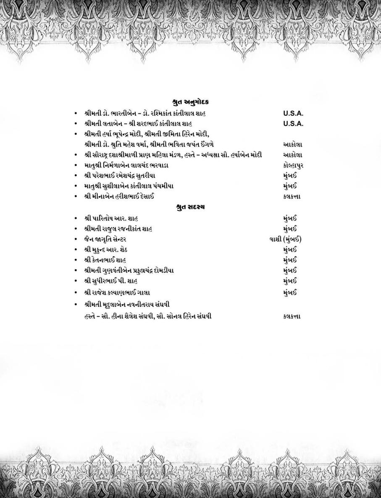
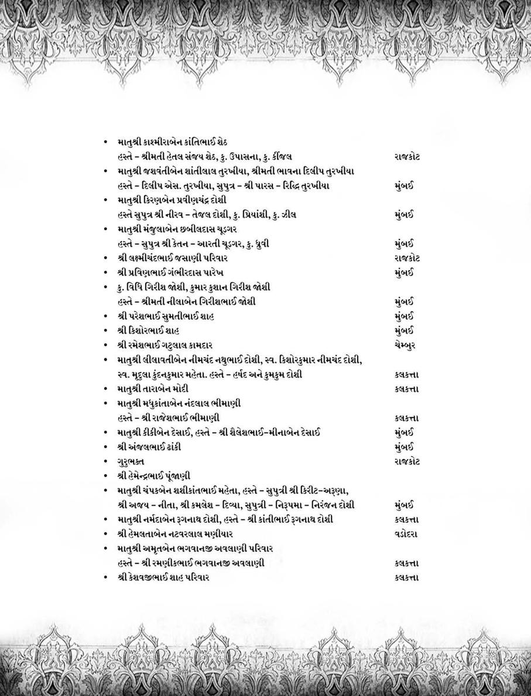
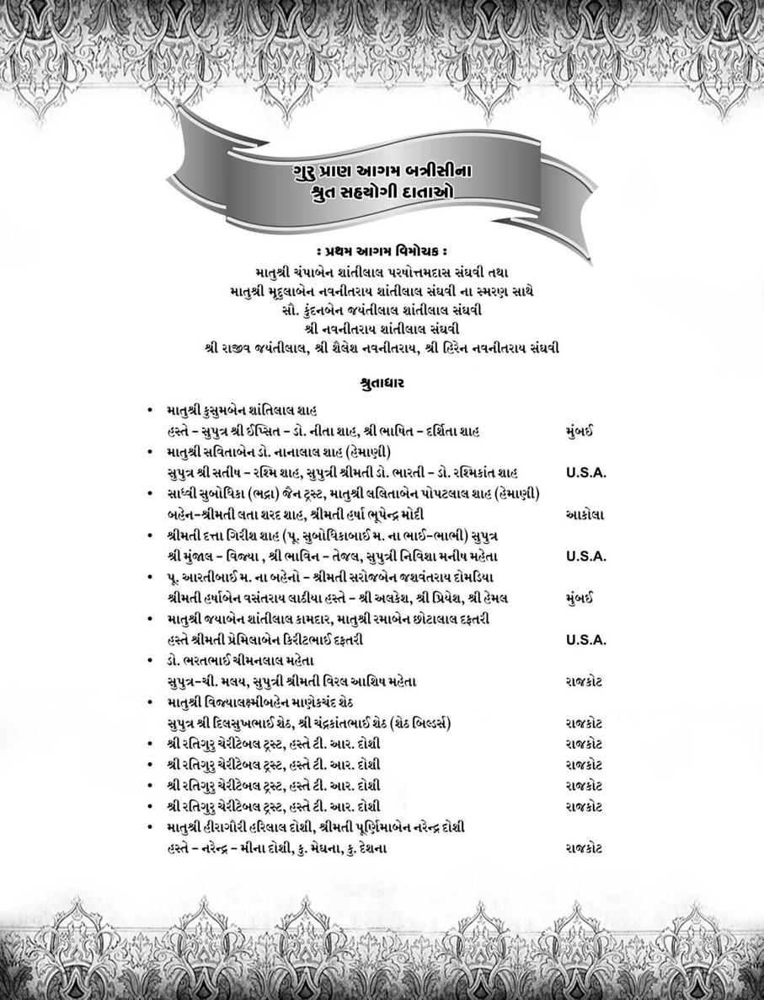

This book Unicode and EPUB Converted by Parth Shah (myself) free of charge as Gyaanseva. You can contact on caparthdshah@gmail.com for further details. You may quote reference "Jain Website"
|
દેવકી (સગી) ધારણી દેવકી ધારિણી ધારિણી |
નાગ ગાથાપતિ વસુદેવ (સગા) વસુદેવ વસુદેવ બળદેવ વસુદેવ |
32 શ્રેષ્ઠિ કન્યા 50 કન્યા સોમા (વાગ્દતા) 8 રાજકન્યા '' |
|||
ચતુર્થ 10 |
જાલિ, મયાલિ, ઉવયાલિ પુરિસષેણ વારિષેણ–પ પ્રદ્યુમ્ન કુમાર – 1 શાંબકુમાર – 1 અનિરૂદ્ધકુમાર સચનેમિ તથા દઢનેમિ – ર |
ધારિણી રૂક્ષ્મ્ણી જામ્બવતી વૈદર્ભી શિવાદેવી |
વસુદેવ કૃષ્ણ મહારાજ '' પ્રદ્યુમ્નકુમાર સમુદ્ર વિજયજી |
50 રાજકન્યા 50 રાજકન્યા '' '' '' |
|
પાંચમો 10 |
પદ્માવતી, ગૌરી, ગંધારી, લક્ષ્મણા સુસીમા, જામ્બવતી, સત્યભામા અને રૂક્ષ્મણી – 8 મૂલસિરિ તથા મૂલદત્તા – ર |
સાસુજી દેવકીજી સાસુજી જાંબવતી |
સસરાજી વસુદેવજી સસરાજી કૃષ્ણમહારાજ |
પતિ કૃષ્ણ મહારાજ પતિ શાંબકુમાર |
|
મુક્તાત્માઓનું વિવરણ કોષ્ટક :–
પરિશિષ્ટ–1
199
દીક્ષા પર્યાય |
અભ્યાસ |
નગરી |
તપ વિશેષ |
સંથારા દિન |
નિર્વાણ ભૂમિ |
12 વર્ષ |
11 અંગ |
દ્વારિકા |
12 ભિક્ષુપ્રતિમા ગુણરત્ન સંવત્સર આદિ તપ |
1 માસ |
શે ત્રું જ ય |
16 વર્ષ |
11 અંગ |
દ્વારિકા |
12 ભિક્ષુ પ્રતિમા ગુણરત્ન સંવત્સર આદિ તપ |
1 માસ |
શેત્રુંજય |
20 વર્ષ '' 1 દિવસ 20 વર્ષ '' |
14 વર્ષ '' '' 14 પૂર્વ '' |
ભદ્દિલપુર (પાલન) મૂળ નગરી દ્વારિકા દ્વારિકા '' '' '' |
ગૌતમ કુમારની જેમ યાવત્ પ્રતિમા તથા છઠના પારણે છઠ ગૌતમકુમારની જેમ AFZDL lE1F] 5|lTDF ગૌતમકુમારની જેમ '' |
1 માસ '' – 1 માસ '' |
શેત્રુંજય મહાકાલ શ્મશાન શેત્રુંજય '' |
16 વર્ષ '' '' '' '' |
12 અંગ '' '' '' '' |
'' '' '' '' '' |
ગૌતમકુમારની જેમ '' '' '' '' |
1 માસ '' '' '' '' |
શેત્રુંજય '' '' '' '' |
20 વર્ષ '' |
11 અંગ '' |
'' '' |
ઉપવાસ છઠ, અઠ્ઠમ આદિ અનેકવિધ તપ '' |
1 માસ '' |
ગ્રામ તથા નગરના ઉદ્યાનો '' |
પરિશિષ્ટ–1
200 શ્રી અંતગડ સૂત્ર
છઠ્ઠો 16 |
મકાઈઅને કિંકમ ગાથાપતિ–ર મુદ્ગરપાણિયક્ષ (અર્જુનમાળી)–1 કાશ્યપ ગાથાપતિ–1 ક્ષેમક તથા ધૃતિધર શેઠ–ર કૈલાસ હરિચંદન શેઠ–ર શ્રી વારતક ગાથાપતિ–1 શ્રી સુદર્શન શેઠ–ર પૂર્ણભદ્ર સુમનભદ્ર શેઠ–1 સુપ્રતિષ્ઠિત શેઠ – 1 શ્રી મેઘકુમાર ગાથાપતિ – 1 અતિમુક્ત રાજકુમાર – 1 અલક્ષ રાજા – 1 |
– – – – – – – – – શ્રીદેવી – |
– – – – – – – – – વિજય રાજા – |
– બંધુમતી – – – – – – – – – |
પ્ર ભુ શ્રી મ હા વી ર સ્વા મી |
સાતમો 13 |
નંદા, નંદવતી, નંદોત્તરા, નંદશ્રેણિકા, મસતા, સુમસતા, મહામસતા, મસદેવી EÛF4 ;]EÛF4 ;]ÔTF4 સુમનાયિકા, ભૂતદત્તા આદિ મહારાણી–13 |
– – – – |
– – – – |
શ્રેણિક મહારાજ '' '' '' |
|
આઠમો 10 |
કાલી આદિ મહારાણી–10 |
– |
– |
શ્રેણિક મહારાજ |
|
201
16 વર્ષ 6 માસ 16 વર્ષ 16 વર્ષ 12 વર્ષ 12 વર્ષ પ વર્ષ અનેક વર્ષ 27 વર્ષ VG[S '' '' |
11 અંગ – 11 અંગ '' '' '' '' '' '' '' '' '' |
રાજગૃહી રાજગૃહી રાજગૃહી કાકન્દી સાકેત નગર રાજગૃહી વાણિજયગ્રામ શ્રાવસ્તી રાજગૃહી પોલાસપુર વાણારસી |
12 ભિક્ષુપ્રતિમા ગુણરત્ન સંવત્સરાદિ છઠના પારણે છઠ ગૌતમકુમારની જેમ '' '' '' '' '' '' '' |
1 માસ અર્ધ માસ 1 માસ '' '' '' '' '' '' '' '' |
વિપુલગિરી રાજગૃહી વિપુલગિરી '' '' '' '' '' '' '' '' |
|
20 વર્ષ |
11 અંગ |
રાજગૃહી (શ્રેણિક રાજાની હાજરીમાં દીક્ષિત થયા) |
ઉપવાસ, છઠ, અઠ્ઠમ અનેકવિધ તપશ્ચર્યા |
1 માસ |
ગામ નગર ના ઉદ્યાન |
|
જુદી જુદી પાછળના ચાર્ટ પ્રમાણે |
11 અંગ |
ચંપાનગરી (શ્રેણિકના મૃત્યુ બાદ દીક્ષિત થયા) |
બધા મહારાણીના તપ અલગ–અલગ છે પાછળના ચાર્ટ પ્રમાણે |
ગામ નગરના ઉદ્યાન |
1 માસ |
|
પરિશિષ્ટ–1
202 શ્રી અંતગડ સૂત્ર
કાલી રાણી |
રત્નાવલી |
1 વર્ષ, 3 માસ, રર દિન પ વર્ષ, ર માસ, 28 દિન |
1 વર્ષ 24 દિન 4 વર્ષ 3 માસ, 6 દિન |
88 352 |
8 વર્ષ |
|||||||
સુકાલી રાણી |
કનકાવલી |
1 વર્ષ, પ માસ, 12 દિન પ વર્ષ, 9 માસ, 18 દિન |
1 વર્ષ, ર માસ, 14 દિન 4 વર્ષ, 9 માસ, 26 દિન |
88 352 |
9 વર્ષ |
|||||||
મહાકાલી રાણી |
લધુસિંહ નિષ્ક્રિડીત |
6 માસ, 7 દિન ર વર્ષ, 28 દિન |
પ માસ, 4 દિન 1 વર્ષ, 8 માસ, 16 દિન |
33 132 |
10 વર્ષ |
|||||||
કૃષ્ણા રાણી |
મહાસિંહ નિષ્ક્રિડીત |
1 વર્ષ, 6 માસ, 18 દિન 6 વર્ષ, ર માસ, 12 દિન |
1 વર્ષ, 4 માસ, 16 દિન પ વર્ષ, 6 માસ, 8 દિન |
61 244 |
11 વર્ષ |
|||||||
સુકૃષ્ણા રાણી |
સપ્ત સપ્તમિકા અષ્ટ અષ્ટમિકા નવ નવમિકા પ્ર દશ દશમિકા પ્ર |
્રતિમા પ્રતિમા તિમા તિમા |
49 દિન 64 દિન 81 દિન 100 દિન |
196 દત્તિ 288 દત્તિ 405 દત્તિ 550 દત્તિ |
12 વર્ષ |
|||||||
કુલ યોગ |
294 દિન |
1439 દત્તિ |
||||||||||
મહાકૃષ્ણા રાણી |
લઘુસર્વતોભદ્ર |
100 દિન 400 દિન |
75 દિન 300 દિન |
રપ 100 |
13 વર્ષ |
|||||||
વીરકૃષ્ણા રાણી |
મહાસર્વતોભ દ્ર |
245 દિન 980 દિન |
196 દિન 784 દિન |
49 196 |
14 વર્ષ |
|||||||
રામકૃષ્ણા રાણી |
ભદ્રોત્તર પ્રતિમા |
6 માસ, 20 દિન 26 માસ, 20 દિન |
175 દિન 700 દિન |
રપ 100 |
15 વર્ષ |
|||||||
પિતૃસેન કૃષ્ણા રાણી |
મુક્તાવલી |
11 માસ, 15 દિન 3 વર્ષ, 10 માસ |
285 દિન 3 વર્ષ, ર માસ |
60 240 |
16 વર્ષ |
|||||||
મહાસેન કૃષ્ણા રાણી |
વર્ધમાન આયંબિલ |
14 વર્ષ,3 માસ, 20 દિન |
14 વર્ષ, 10 દિન [પારણા નથી લીધા] |
100 ઉપવાસ |
17 વર્ષ |
|||||||
નામ |
તપ દિન એક પરિપાટી“ તપ દિન ચાર પરિપાટી |
તપ વિશેષ |
એક પરિપાટી–તપશ્ચર્યા |
ક્ષા દી |
પારણા |
|||||||
ચાર પરિપાટી–તપશ્ચર્યા |
પારણા |
|||||||||||
આઠમા વર્ગનો વિશેષ ચાર્ટ :–
“ 'તપ દિન'માં રત્નાવલી આદિના તપ–પારણાનો સંપૂર્ણ સમય છે અને 'તપશ્ચર્યા'માં કેવળ તપશ્ચર્યા દિન છે.
પરિશિષ્ટ–ર 203
પરિશિષ્ટ–3
શ્રી અંતગડ સૂત્ર ઉપર આઠ દ્વાર ઉતારવામાં આવ્યાં છે.
(1) અવસ્થા દ્વાર :–
અહીં અવસ્થા ત્રણ પ્રકારની છે.
આયુષ્યાનુસાર સાધુ સાધ્વી |
1. બાલ્યાવસ્થા 1 × ર. કુમારાવસ્થા 1 × 3. યુવાવસ્થા 23 ર 4. પ્રૌઢાવસ્થા 18 31 પ. વૃદ્ધાવસ્થા 14 × કુલ 90 આત્મામાંથી 57 33 |
લિંગ અનુસાર પુરુષ– 57 + સ્ત્રી – 33 = 90
વૈવાહિક સ્થિતિ અનુસાર |
સાધુ સાધ્વી |
|
1. વિવાહિત ર. કુમારાવસ્થા 3. સૌભાગ્યવંતા 4. વિધવા |
પપ ર × × |
× × 23 10 |
મૂલદત્તા, મૂલસિરિના પતિ દિક્ષિત હોવાથી |
||
સૌભાગ્યવંતા ગણ્યા છે. |
||
કુલ–90 |
57 |
33 |
(ર)નગર દ્વાર સાધુ સાધ્વી |
1. દ્વારિકા 35 10 ર. રાજગૃહી 6 13 3. ચંપાનગરી × 10 4. ભદ્દિલપુર 6(પાલન) 10 પ. કાકંદી ર × 6. વાણિજ્યગ્રામ ર × 7. શ્રાવસ્તી ર × 8. પોલાસપુર 1 × 9. વાણારસી 1 × 10 સાકેત ર 1 કુલ–90માંથી 57 33 |
(3) કુલ દ્વાર |
સાધુ સાધ્વી |
||
1. યદુકુળમાં ક. અંધક વૃષ્ણિપુત્ર ખ. વસુદેવ પુત્ર ગ. વસુદેવ–નાગપુત્ર ઘ. કૃષ્ણપુત્ર ડ. બળદેવપુત્ર ચ. સમુદ્રવિજયપુત્ર છ. યદુકુળની મહારાણી |
41 18 10 6 ર 3 ર × |
10 × × × × × × 8 |
|
જ. કૃષ્ણ પુત્રવધૂ × ર |
|||
ર. રાજકુળમાં ક. શ્રેણિક રાણી વિજયરાજા, શ્રીદેવી અંગજાત અઈવંતા |
16 2 1 |
23 23 × |
|
રાજા અલક્ષ 1 × 3. શ્રેષ્ઠીકુળ ગાથાપતિ 13 × 4. માળીકુળ– 1 × અર્જૂનમાળી પરિશિષ્ટ–3
204 શ્રી અંતગડ સૂત્ર
(4)અધ્યયન સાધુ સાધ્વી |
1. અષ્ટ પ્રવચન માતા ર × ર. 11 અંગ 33 33 3. 14 પૂર્વ 12 × 4. દ્વાદશાંગી 10 × કુલ 90 માંથી 57 33 |
(પ) સંથારા દ્વાર સાધુ સાધ્વી |
1. અર્ધમાસ 1 અર્જુન × ર. એકમાસ પપ 33 3. સંથારા રહિત 1 × |
(6) નિર્વાણભૂમિ દ્વાર સાધુ સાધ્વી |
1. શ્મશાન ભૂમિ 1 × ર. રાજગૃહમાત્ર 1 × 3. ઉદ્યાન–ઉપાશ્રયમાં × 33 4. શેત્રુંજય પર 40 × પ. વિપુલગિરિ 15 × |
(7) સંયમ દ્વાર સાધુ સાધ્વી |
1. એક દિવસ 1 × ર. છ માસ 1 × 3. પાંચ વર્ષ ર × 4. બાર વર્ષ 13 × પ. 16 વર્ષ 23 × 6. 20 વર્ષ 12 23 7. 27 વર્ષ ર × 8. ક્રમશઃ 8 થી 17 વર્ષ સુધી × 10 9. અનેક વર્ષ 3 × |
(8) સંકેત દ્વાર :– અંતગડ સૂત્રના નગર આદિના વર્ણન માટે કયા કયા શાસ્ત્રોનો આધાર લેવામાં આવ્યો છે તે નીચે પ્રમાણે છે.
વર્ગ કોનું વર્ણન કયા સૂત્રનો આધાર 1. નગરી, ઉદ્યાન રાજાદિ શ્રી ઔપપાતિક સૂત્ર
આર્યસુધર્મા, જંબૂ વિ. |
શ્રી જ્ઞાતાધર્મકથા સૂત્ર |
રૈવતક, નંદનવન, સુરપ્રિય શ્રી વૃષ્ણિદશા સૂત્ર |
|
મહાબલકુમાર |
શ્રી ભગવતી સૂત્ર સૂ. શતક 11, ઉદ્દેશો–1 શ્રી જ્ઞાતાધર્મકથા, અ–પ શ્રી જ્ઞાતાધર્મકથા, અ–પ શ્રી ભ. સૂત્ર, શતક–ર ઉદ્દેશો–1 શ્રી ઉપાસક દ. અ–1 શ્રી રાયસેણીય સૂત્ર, |
અરિષ્ટનેમિ, સમવસરણ મેઘકુમાર ખંધક સંન્યાસી |
|
3. ગાથાપતિવર્ણન દઢ પ્રતિજ્ઞ પરદેશી રાજાનો |
|
આગામી ત્રીજો ભવ એ બે વચ્ચેનો |
|
સૂર્યાભ–દેવનો ભવ ગૌતમ સ્વામી |
શ્રી ભ. સૂત્ર, શતક–ર ઉદ્દેશો–પ શ્રી ભ. સૂત્ર, શતક–9 ઉદ્દેશો–33 શ્રી જ્ઞાતાધર્મકથા સૂત્ર, અધ્યયન–1 શ્રી ભ. સૂત્ર, શતક–ર, ઉ–1. શ્રી ભ. સૂ., શતક–16ં ઉદ્દેશો–પ શ્રી ભ. સૂ. શ. ર, ઉદ્દે. પ, શ્રી ભ. સૂ. શ.11, ઉદ્દે.9 શ્રી ઔપપાતિક શ્રી ભ. સૂ. શ. 13, ઉદ્દે.6 શ્રી અનુત્તરોવવાઈ સૂત્ર વર્ગ–3 |
દેવાનંદા |
|
અભયકુમાર |
|
બ્રાહ્મણ |
|
6. ગંગદત્ત |
|
શ્રમણોપાસક અભિષેક કોણિક ઉદાયન 8. તપશ્ચર્યાથી શરીરની સ્થિતિ. |
|
205
પરિશિષ્ટ–4 વિષયાનુક્રમ |
|
આગમમાં વર્ણિત વિશેષ નામ : (1) તીર્થંકર વિશેષ (ર) આગમમાં વર્ણિત 'જહા' શબ્દથી ગૃહિત વ્યક્તિ વિશેષ. (3) આગમ વિશેષ (4) વ્યક્તિ વિશેષ–મુનિ આદિ. (પ) દેવ વિશેષ. (6) ક્ષત્રિય વર્ણના વ્યક્તિ વિશેષ. (7) વૈશ્યવર્ણના વ્યક્તિ–ગાથાપતિ આદિ. (8) બ્રાહ્મણવર્ણના વ્યક્તિવિશેષ. (9) ક્ષુદ્રવર્ણના વ્યક્તિ વિશેષ. (10) મંડળી વિશેષ. (11) પશુ વિશેષ. (12) તપ વિશેષ. (13) સ્વપ્ન વિશેષ. (14) નગરી વિશેષ. (15) દ્વીપ વિશેષ. (16) યક્ષાયતન. (17) ઉદ્યાન. (18) પર્વત. (19) વૃક્ષ વિશેષ. (20) પુષ્પલતાદિ (21) ધાતુ વિશેષ (રર) ભવન વિશેષ (23) બંધન વિશેષ (24) વસ્તુ વિશેષ (રપ) યાન વિશેષ (26) અલંકાર વિશેષ (27) પકવાન વિશેષ (28) ગ્રહ વિશેષ (29) ક્ષેત્ર વિશેષ |
આગમમાં વર્ણિત વિશેષ નામ : 1. તીર્થંકર વિશેષ :– (1) અમમ તીર્થંકર(આગામી) (ર) અરિષ્ટનેમિ તીર્થંકર વર્ગ 1 થી પ (3) મહાવીર સ્વામી વર્ગ 6 થી 8 ર. 'જહા' શબ્દની ગ્રહિત વ્યક્તિ વિશેષ :– (1) અભયકુમાર (ર) ઉદાયન (3) ગંગદત્ત (4) ગૌતમસ્વામી (પ) દેવાનંદા બ્રાહ્મણી (6) મહાબલકુમાર (7) મેઘકુમાર (8) સ્ંદકમુનિ 3. આગમ વિશેષ :– (1) ઉવાસગદસા(ઉપાસક દશાંગ) (ર) પણ્ણત્તિ(ભગવતી સૂત્ર) 4. પ્રયુક્ત વ્યક્તિ વિશેષ–મુનિ આદિ :– (1) અતિમુક્તકુમારશ્રમણ(કંસના ભાઈ) (ર) ગૌતમસ્વામી (3) ચંદના (4) યક્ષિણી આર્યા પ. દેવ વિશેષ :– (1) મુદ્ગરપાણિ યક્ષ (ર) વૈશ્રમણ કુબેર (3) હરિણૈગમેષી 6. ક્ષત્રિયવર્ગના વ્યક્તિ વિશેષ :– રાજા (1) અંધકવૃષ્ણિ (ર) અલક્ષ (3) કૃષ્ણ વાસુદેવ (4) કોણિક રાજા |
પરિશિષ્ટ–4
206 શ્રી અંતગડ સૂત્ર (પ) જિતશત્રુરાજા (6) વિજયરાજા (7) વસુદેવરાજા (8) બળદેવરાજા (9) સમુદ્રવિજયરાજા (10) શ્રેણિક રાજા રાણીઓ :–
(1) અંધકવૃષ્ણિ પત્ની ધારિણી (ર) કાલી રાણી (3) કૃષ્ણા રાણી (4) ગાંધારી (પ) ગૌરી દેવી (6) ચેલણા (7) જાંબવતી (8) દેવકી (9) ધારિણીદેવી (10) નંદશ્રેણિકા (11) નંદા (12) નંદાવતી (13) નંદોત્તરા (14) પદ્માવતી (15) પિતૃસેનકૃષ્ણા (16) બળદેવ પત્ની ધારિણી (17) ભદ્રા (18) મરુદેવી (19) મરુતા (20) મહાકાલી (21) મહાકૃષ્ણા (રર) મહામરૂતા (23) મહાસેન કૃષ્ણા (24) મૂલદત્તા (રપ) મૂલશ્રી (26) રામકૃષ્ણા (27) રૂક્ષ્મણી (28) લક્ષ્મણા (29) વસુદેવ પત્ની ધારિણી (30) વીરકૃષ્ણા (31) વૈદર્ભી (32) સત્યભામા (33) સુકાલી (34) સુકૃષ્ણા (35) સુજાતા (36) સુભદ્રા (37) સુમનાયિકા (38) સુમરૂતા (39) સુસીમા (40) શ્રીદેવી રાજકુમારો :–
(1) અચલકુમાર (ર) અતિમુક્તકુમાર(અઈવંતા)
(3) અનંતસેનકુમાર (4) અનાદષ્ટિકુમાર (પ) અનિયસ(અનિકસેન)કુમાર (6) અનિરૂદ્ધકુમાર (7) અનીહતકુમાર (8) અભિચંદ્રકુમાર (9) અક્ષોભકુમાર (10) ઉવયાલિકુમાર (11) કાંપિલ્યકુમાર (12) કૂપદારકુમાર (13) ગજસુકુમાલકુમાર (14) ગંભીરકુમાર (15) ગૌતમકુમાર (16) જાલિકુમાર (17) દઢનેમિકુમાર (18) દારૂકકુમાર 207
(19) દુર્મુખકુમાર (20) દેવયશકુમાર (21) ધરણકુમાર (રર) પ્રદ્યુમનકુમાર (23) પ્રસેનજિતકુમાર (24) પૂરણકુમાર (રપ) પુરિસષેણકુમાર (26) મયાલિકુમાર (27) વારિષેણકુમાર (28) વિદ્ધતકુમાર (29) વિષ્ણુકુમાર (30) સત્યનેમિકુમાર (31) સમુદ્રકુમાર (32) સાગરકુમાર (33) સારણકુમાર (34) સ્તિમિતકુમાર (35) સુમુખકુમાર (36) શત્રુસેનકુમાર (37) શાંબકુમાર (38) હિમવાનકુમાર 7. વૈશ્યવર્ણના વ્યક્તિ–ગાથાપતિ આદિ :–
(1) કાશ્યપગાથાપતિ (ર) કિંકમગાથાપતિ (3) કૈલાસજીગાથાપતિ (4) દ્વિપાયનૠષિ (પ) દ્યૃતિધરજી (6) નાગગાથાપતિ (7) પૂર્ણભદ્રજી (8) મકાઈ ગાથાપતિ (9) શ્રી મેઘકુમારગાથાપતિ (10) વારત્તગાથાપતિ (11) સુદર્શનશેઠ(અર્જુનમાળી)
(12) સુદર્શનશેઠ(સ્વતંત્ર)
(13) સુપ્રતિષ્ઠિતજી (14) સુમનભદ્રજી (15) સુલસા(નાગગાથાપત્ની)
(16) હરિચંદજી (17) ક્ષેમકગાથાપતિ 8. બ્રાહ્મણવર્ગના વ્યક્તિ વિશેષ :–
(1) સોમશ્રી (ર) સોમા (3) સોમિલ બ્રાહ્મણ 9. ક્ષુદ્રવર્ણના વ્યક્તિ વિશેષ :–
(1) અર્જુનમાળી (ર) બંધુમતી(અર્જુનપત્ની)
10. મંડળી વિશેષ :–
(1) લલિતમંડળી(ટોળકી)
11. પશુ વિશેષ :–
(1) હસ્તિરત્નવિશેષ 12. તપ વિશેષ :–
(1) અષ્ટ અષ્ટમિકા (ર) આયંબિલ વર્ધમાન તપ (3) એકરાત્રિની મહાપ્રતિમા (4) કનકાવલી તપ (પ) ગુણરત્ન સંવત્સર તપ (6) દશદશમિકા તપ (7) નવ નવમિકા ત (8) બાર ભિક્ષુપ્રતિમા (9) ભદ્રોત્તર પ્રતિમા (10) મહાસર્વતોભદ્ર (11) મહાસિંહ નિષ્ક્રીડિત (12) મુક્તાવલી (13) રત્નાવલી (14) લઘુ સર્વતોભદ્ર (15) લઘુસિંહ નિષ્ક્રીડીત (16) સપ્ત સપ્તમિકા ભિક્ષુપ્રતિમા પરિશિષ્ટ–4
208 શ્રી અંતગડ સૂત્ર 13. સ્વપ્ન વિશેષ :–
(1) કુંભ(કળશ)
(ર) ચંદ્ર (3) ધ્વજા (4) નિર્ધૂમ અગ્નિ (પ) પદ્મસરોવર (6) પુષ્પમાળા (7) ભવન (8) રત્નરાશિ (9) લક્ષ્મી (10) વિમાન (11) વૃષભ (12) સમુદ્ર (13) સિંહ (14) સૂર્ય (15) હસ્તિ 14. નગરી વિશેષ :–
(1) અલ્કાપુરી (કુબેરનગરી)
(ર) કાકંદીનગરી (3) ચંપાનગરી (4) દ્વારિકાનગરી (પ) પાંડુમથુરા(પાંડવોની રાજધાની)
(6) પોલાસપુર (7) ભદ્દિલપુર (8) રાજગૃહીનગરી (9) વાણિજ્યનગરી (10) વાણારસી(વારાણસી)
(11) સાકેત(અયોધ્યા)
(12) શતદ્વારનગરી (13) શ્રાવસ્તીનગરી 15. દ્વીપ નગરી :–
(1) જંબૂદ્વીપ 16. યક્ષાયપન :–
(1) પૂર્ણભદ્ર (ર) સુરપ્રિય 17. ઉદ્યાન :–
(1) કામમહાવન (ર) ગુણશીલ (3) દ્યુતિપલાશ (4) નંદનવન (પ) સહસ્રામ્રવન (6) શ્રીવન 18. પર્વત :–
(1) રૈવતક (ર) વિપુલાચલ (3) શત્રુંજય (4) હિમવાન 19. વૃક્ષ વિશેષ :–
(1) અશોકવૃક્ષ (ર) કોરંટ વૃક્ષ (3) કોશામ્રવૃક્ષ (4) ન્યગ્રોધવૃક્ષ(વટવૃક્ષ)
20. પુષ્પલતાદિ :–
(1) કદમ્બ પુષ્પ (ર) કિંશુક(પલાશ) પુષ્પ (3) કોરંટ પુષ્પ (4) ચંપકલતા (પ) જાસૂના પુષ્પ (6) પારિજાત પુષ્પ (7) રક્તબંધુ જીવક(વીરવહૂટી)
21. ધાતુ વિશેષ :–
(1) સુવર્ણ રર. ભવનવિશેષ :–
(1) ઈન્દ્રસ્થાન(બાળકોના રમત ગમતનું સ્થાન)
(ર) અંતઃપુર(કન્યા મહેલા)
(3) ઉપસ્થાનશાળા 209
(4) પૌષધશાળા (પ) વાસગૃહ 23. બંધન વિશેષ :–
(1) અવકોટક બંધન (ર) કુંચકબંધન 24. વસ્તુ વિશેષ :–
(1) અનેકવિધ ટોપલીઓ (ર) કોરંટપુષ્પનું છત્ર (3) સુવર્ણનો દડો(બંદૂક)
(4) શ્વેત ચામર (પ) લોહમુદ્ગર(1000 ભારનું)
રપ. યાન વિશેષ :–
(1) વૃષભરથ (ર) હસ્તીસ્કંધ 26. અલંકાર વિશેષ :–
(1) વલયબાહુ(કંકણ)
27. પકવાન વિશેષ :–
(1) સિંહકેસર મોદક 28. ગ્રહ વિશેષ :–
(1) સૂર્ય 29. ક્ષેત્ર વિશેષ :–
(1) ભરત ક્ષેત્ર પરિશિષ્ટ–પ વિષયાનુક્રમ વ્યક્તિ અને ભોગૌલિક પરિચય :–
1. વિશિષ્ટ વ્યક્તિ પરિચય (1) અભયકુમાર (ર) ઈન્દ્રભૂતિ ગૌતમગણધર (3) કોણિક (4) ચેલણા (પ) જંબૂસ્વામી (6) જમાલી (7) જિતશત્રુરાજા (8) દ્વિ–દ્વૈપાયમાનૠષિ (9) મહાબલકુમાર (10) મેઘકુમાર (11) હરિણૈગમેષીદેવ (12) સ્કંધક મુનિ (13) સુધર્માસ્વામી (14) શ્રેણિક રાજા ર. ભૌગોલિક પરિચય (1) કાકંદી (ર) ગુણશીલ (3) ચંપા (4) જંબૂદ્વીપ (પ) દ્વારિકા(દ્વારવતી)
(6) દ્યુતિપલાશ ચૈત્ય (7) ભદ્દિલપુર (8) ભરતક્ષેત્ર (9) રાજગૃહ (10) રૈવતક (11) વિપુલગિરિ પર્વત (12) સહસ્રારમ્રવન ઉદ્યાન (13) સાકેત (14) શ્રાવસ્તી પરિશિષ્ટ–4
210 શ્રી અંતગડ સૂત્ર વ્યક્તિ અને ભૌગોલિક પરિચય વિશિષ્ટ વ્યક્તિ પરિચય :–
આ ગ્રંથાગમમાં તીર્થંકરો, ગણધરો, રાજાઓ, રાજકુમાર એવં રાણીઓ આદિનો ઉલ્લેખ છે.
આગમ અને ઐતિહાસિક દષ્ટિથી તેનો વિશેષ પરિચય અહીં આપવામાં આવ્યો છે. જે આ પ્રમાણે છે–
ભગવાન અરિષ્ટનેમિ તથા પ્રભુ મહાવીર સ્વામી જેઓ સિદ્ધગતિને પામેલા નેવું આત્માઓના પ્રાણાધાર છે, તેમનું જીવન પ્રસિદ્ધ હોવાથી વિશેષ પરિચય અહીં નથી આપ્યો.
(1) અભયકુમાર :– ''जहा अभओ'' આ સંકેત દ્વારા જ્ઞાતાસૂત્રમાં મેઘકુમારના અધિકારમાં ચાર બુદ્ધિના ધણી અભયકુમારે પોતાની લઘુમાતા ધારિણીનો દોહદ પૂર્ણ કરવા પોતાના પૂર્વભવના મિત્રદેવ સૌધર્મકલ્પવાસી દેવની પૌષધયુક્ત અઠ્ઠમતપની આરાધનાથી હરિણૈગમેષી દેવનું ધ્યાન કર્યું અને તેમને પ્રસન્ન કર્યા હતા. તે દેવ દ્વારા અકાલે મેઘનો દોહદ પૂર્ણ કરાવી લઘુમાતાને ખુશ કર્યા હતા. તેવી જ રીતે કૃષ્ણ મહારાજે માતા દેવકીનો મનોરથ પૂર્ણ કરવા હરિણૈગમેષી દેવનું ધ્યાન ધર્યું અને માતાની ઈચ્છા પૂર્ણ કરી તેને ખુશ કર્યા હતા.
(ર) ઈન્દ્રભૂતિ ગૌતમ ગણધર :– ઈન્દ્રભૂતિ ગૌતમ ભગવાન મહાવીરના પ્રધાન શિષ્ય હતા. મગધની રાજધાની રાજગૃહની પાસે ગોબરગામ તેમની જન્મભૂમિ હતી. मगहा गुब्बरगामे जाया तिन्ने्व गोयमस्स गुत्ता – (આવશ્યકનિર્યુક્તિ ગા. 643) જે આજે નાલંદાનો જ એક ભાગ મનાય છે.
તેઓશ્રીના પિતાનું નામ વસુભૂતિ તથા માતાનું નામ પૃથ્વી હતું. તેમનું ગોત્ર ગૌતમ હતું. आद्यानां त्रयाणां, गणभृतां पिता वसुभूतिः । आद्यानां त्रयाणां गणभृतां माता पृथिवि ॥ (આવશ્યક મલય. 338)
ગૌતમનો વ્યુત્પત્તિજન્ય અર્થ કરતા જૈનાચાર્યોએ લખ્યું છે કે બુદ્ધિ દ્વારા જેનો અંધકાર નષ્ટ થઈ ગયો છે તે ગૌતમ છે. गोभिस्तमो ध्वस्तं यस्य स गौतमः – (અભિધાન રાજેન્દ્ર કોષ ભા. 3.)
આમ તો ગૌતમ શબ્દ કુલ અને વંશનો વાચક છે. સ્થાનાંગ સૂત્રમાં સાત પ્રકારના ગૌતમ બતાવવામાં આવ્યા છે– ગૌતમ, ગાર્ગ્ય, ભારદ્વાજ, આંગિરસ, શર્કરાભ, ભાસ્કરાભ, ઉદકાત્માભ. વૈદિક સાહિત્યમાં ગૌતમ શબ્દ કુળથી પણ સંબંધિત છે અને ૠષિઓથી પણ.– (સ્થાનાંગ સૂત્ર 7/551)
ગૌતમ નામથી અનેક ૠષિ, ધર્મસૂત્રકાર, ન્યાયશાસ્ત્રકાર, ધર્મશાસ્ત્રકાર પ્રભૃતિ વ્યક્તિ થઈ ગયા. અરુણ ઉદ્દાલક, અરુણી આદિ ૠષિઓનું પણ પૈતૃકનામ ગૌતમ હતું. ઈન્દ્રભૂતિ ગૌતમનું ગોત્ર ક્યું હતું અને તેઓ કયા ૠષિવંશથી સંબંધિત હતા તે કહેવું કઠિન છે પરંતુ એટલુ નિર્વિવાદ સત્ય છે કે ગૌતમ ગોત્રના મહાન ગૌરવને અનુરૂપ જ તેમનું વ્યક્તિત્વ વિરાટ અને પ્રભાવશાળી હતું. આગમો તથા આગમેતર સાહિત્યમાં ગૌતમનું ઘણું વર્ણન મળે છે.
એકવાર પાવાપુરીમાં આર્ય સોમિલ બ્રાહ્મણનું નિમંત્રણ મળતાં યજ્ઞોત્સવ માટે ઈન્દ્રભૂતિ ગૌતમ 211
ત્યાં આવે છે. તે જ સમયે ભગવાન મહાવીર પણ પાવાપુરી બહાર મહાસેન ઉદ્યાનમાં પધાર્યા હતા.
ભગવાનનો મહિમા, દેવાતિશય જોઈ તેમનો પરાજય કરવા અહંકારથી ગૌતમ સમવસરણમાં આવ્યા પરંતુ સ્વયં જ પ્રભાવિત થઈ, 500 શિષ્યો સાથે પ્રભુના શિષ્ય બની ગયા. પ્રભુની દેશનામાં ગણધર પદવી પામ્યા.
50 વર્ષની ઉંમરે તેઓ દીક્ષિત થયા. 30 વર્ષ છદ્મસ્થ સાધુ પર્યાયમાં અને બાર વર્ષ કેવળી પર્યાયમાં રહ્યા. પોતાના નિર્વાણ સમયે પોતાનો ગણ આર્ય સુધર્મા સ્વામીને સોંપી, ગુણશીલ ઉદ્યાનમાં માસિક અણસણ કરી પ્રભુ મહાવીરના નિર્વાણ બાદ બાર વર્ષ પછી 92 વર્ષની ઉંમરે નિર્વાણપદને પામ્યા.
શાસ્ત્રોમાં ગૌતમ સ્વામીનો પરિચય આ પ્રમાણ મળે છે– ભગવાનના જ્યેષ્ઠ શિષ્ય હતા. સાત હાથ ઊંચા, ઉત્કૃષ્ટ સંહનન સંસ્થાનના ધણી, સુવર્ણસમા ગૌરવર્ણી, ઉગ્રતપસ્વી, દીપ્તતપસ્વી, મહાતપસ્વી, ઘોરતપસ્વી, ઘોરબ્રહ્મચારી, સંક્ષિપ્ત વિપુલ તેજોલેશ્યાના ધણી, અનાસક્ત, ચૌદપૂર્વી મતિ, શ્રુત, અવધિ, મનઃપર્યવ આદિ ચાર જ્ઞાનના ધારક, સર્વાક્ષર સન્નિપાતી હતા. પ્રભુ મહાવીર સમીપે હંમેશાં ઉત્કટ(ઉકડું)
આસને અને નતમસ્તકે બેસનારા હતા. સંયમી અને તપસ્વી આત્મા હતા.
(3) કોણિક :– રાજા શ્રેણિકની રાણી ચેલ્લણાના પુત્ર, અંગદેશની રાજધાની ચંપાનગરીના અધિપતિ, ભગવાન મહાવીરના પરમ ભક્ત હતા. કોણિક શૌર્યવંતા રાજવી હતા. ભગવતી, ઔપપાતિક અને નિરયાવલિકામાં કોણિકનું વિસ્તૃત વર્ણન છે. રાજ્ય લોભને કારણે પિતા શ્રેણિકને જેલમાં નાંખ્યા હતા. (જો કે પૂર્વ ભવનું વેર હતું) શ્રેણિકના મૃત્યુ પછી પોતાના આ દુષ્કૃત્યને ભૂલી શક્યા નહી અને રાજગૃહીમાંથી તેણે પોતાની રાજધાની ચંપામાં સ્થાપી.
સચેનક હસ્તિનક તથા પૈતૃક સંપત્તિ દિવ્ય હાર પોતાના નાના બે ભાઈ હલ્લ, વિહલ્લ પાસેથી છીનવી લેવા નાના ચેટકરાજા સાથે ભયંકર યુદ્ધ કર્યું હતું. કરોડો વ્યક્તિઓનો સંહાર થયો હતો. કોણિક ચેટકયુક્ત જૈન ઈતિહાસમાં પ્રસિદ્ધ છે.
(4) ચેલ્લણા :– રાજા શ્રેણિકના પ્રિય રાણી તથા વૈશાલીના અધિપતિ ચેટકરાજાના પુત્રી હતાં. ચેટકરાજા જૈનધર્મી શ્રમણોપાસક હતા. ચેલ્લણા સુંદરી, ગુણવતી, બુદ્ધિમતિ, ધર્મપ્રાણ નારી હતાં. શ્રેણિકરાજાને ધર્માનુરક્ત, જૈનધર્મી બનાવવામાં ચેલ્લણાનો બહુ મોટો સહયોગ હતો. ચેલ્લણાનો રાજા શ્રેણિક પ્રતિ કેટલો પ્રગાઢ અનુરાગ હતો તેનું પ્રમાણ ''નિરયાવલિકા''માં મળે છે. કોણિક, હલ્લ અને વિહલ્લ આ ત્રણે ય ચેલ્લણાના પુત્રો હતા.
(પ) જંબૂસ્વામી :– જંબૂસ્વામી સુધર્મા ગણધરના અત્યંત જિજ્ઞાસુ અંતેવાસી શિષ્ય હતા. રાજગૃહ નગરના સમૃદ્ધ, વૈભવશાળી ઈભ્ય શ્રેષ્ઠીપુત્ર હતા. પિતાનું નામ ૠષભદત્ત તથા માતાનું નામ ધારિણી હતું. જંબૂકુમારના જન્મ પૂર્વે માતાએ સ્વપ્નમાં જંબૂવૃક્ષ જોયું હતું. તે કારણે પુત્રનું નામ જંબૂકુમાર રાખ્યું હતું. માતા પિતાના અત્યંત આગ્રહના કારણે લગ્નની અનુમતિ આપી. માતા પિતાએ આઠ ઈભ્યવર શ્રેષ્ઠી કન્યાઓ સાથે જંબૂકુમારનો વિવાહ કર્યો. લગ્નની પ્રથમ રાત્રિએ જ આઠ નવવિવાહિતા પત્નીઓને પરિશિષ્ટ–પ 212 શ્રી અંતગડ સૂત્ર પ્રતિબોધ આપી રહ્યા હતા. તે સમયે વિદ્યાસંપન્ન પ્રભવ ચોર ચોરી કરવા આવ્યો. જંબૂકુમારની વૈરાગ્યપૂર્ણ વાણી સાંભળીને તે પણ પ્રતિબુદ્ધ થઈ ગયો.
પ્રભવાદિ 501 ચોર, 8(આઠ) પત્નીઓ, 16(સોળ) તેના[પત્નીના] માતાપિતા, સ્વયંના માતા પિતા અને સ્વયં જંબૂકુમાર આ પ્રમાણે 528 વ્યક્તિઓએ એક સાથે સુધર્મા સ્વામીની પાસે દીક્ષા ગ્રહણ કરી. જંબૂસ્વામી 16 વર્ષ ગૃહસ્થ અવસ્થામાં રહ્યા. 20 વર્ષ છદ્મસ્થ પર્યાયમાં રહ્યા. 44 વર્ષ કેવળી પર્યાયમાં રહ્યા. 80(એંસી) વર્ષનું સર્વાયુષ્ય ભોગવીને પોતાની પાટ આર્ય પ્રભવ સ્વામીને સોંપી, સિદ્ધ, બુદ્ધ, મુક્ત થયા.
(6) જમાલી :– વૈશાલીના ક્ષત્રિય કુંડનો એક રાજકુમાર હતો. પ્રભુ મહાવીર સ્વામીના જમાઈ અને ભાણેજ થતા હતા. એકવાર પ્રભુની વાણી સાંભળી વૈરાગ્ય થયો. માતાપિતાના મનાવવા પર ન માન્યા.
આઠ પત્નીઓ છોડી પાંચસો(500) ક્ષત્રિયકુમારો સાથે ભગવાન પાસે દીક્ષા ગ્રહણ કરી. સુંદર ચારિત્ર પર્યાયનું પાલન કરતાં હતા, પરંતુ એક દિવસ ગાઢા મિથ્યાત્વનો ઉદય થવા પર, પ્રભુના ''कडमाणे कडे'' ના સિદ્ધાંતથી વિરુદ્ધ પ્રરૂપણા કરવા લાગ્યા. પ્રભુના શાસનમાં સાત નિન્હવ થયા. જમાલી તેમાંના એક થયા.. અંત સુધી વિરુદ્ધ પ્રરૂપણા કરતા નિન્હવના ભાવમાં જ વિચર્યા. કાલ કરી કિલ્વિષી દેવ થયા.
(7) જિતશત્રુરાજા :– શત્રુને જીતનારા રાજા. જે રીતે બૌદ્ધ જાતકોમાં બ્રહ્મદત્તનું નામ આવે છે એવી રીતે જૈન ગ્રંથોમાં પ્રાયઃ જિતશત્રુ રાજાનું નામ આવે છે. જિતશત્રુની સાથે પ્રાયઃ ધારિણીનું નામ પણ આવે છે.
કોઈપણ કથાના પ્રારંભમાં કોઈને કોઈ રાજાનું નામ કહેવાની કથાકારોની પુરાતન પદ્ધતિ છે. કોઈપણ રાજા કે રાણીનું નામ અજ્ઞાત હોય તો જિતશત્રુ અને ધારિણી નામ આપવામાં આવે છે. તેથી જિતશત્રુ તથા ધારિણી નામ રૂઢ નામ છે. (ઓઘપાઠની જેમ) નીચેના નગરોના રાજા જિતશત્રુ બતાવવમાં આવ્યા છે.
નગર વાણિજ્યગ્રામ ચંપાનગરી ઉજ્જયની સર્વતોભદ્રનગર મિથિલાનગરી પંચાલદેશ |
રાજા જિતશત્રુ જિતશત્રુ જિતશત્રુ જિતશત્રુ જિતશત્રુ જિતશત્રુ |
1 ર. 3 4 પ. 6 7 8 9 10 11 |
આમલકલ્પાનગરી જિતશત્રુ |
||
સાવત્થીનગરી |
જિતશત્રુ |
|
આલંભિયાનગરી જિતશત્રુ |
||
વાણારસીનગરી પોલાસપુર |
જિતશત્રુ જિતશત્રુ |
|
213
(8) દ્વૈપાયનૠષિ :– દ્વૈપાયન ૠષિ અભવ્ય જીવ હતા. જ્યારે તેણે પોતાના દ્વારા દ્વારકાનો વિનાશ થશે એવું– ભગવદ્વચન સાંભળ્યું તો તે નિમિત્તથી બચવા નગરી બહાર આશ્રમમાં રહેવા લાગ્યા. ભગવાન પાસેથી નગરી નાશના ત્રણ કારણ જાણીને કૃષ્ણ મહારાજે બધી સુરા(મદિરા) ગામ બહાર ફેંકાવી દીધી.
એક દિવસ કેટલાક કુમારો નગરી બહાર રમવા ગયા. તરસ લાગવાથી પાણી ગોતતા આશ્રમ પાસે આવ્યા અને ખાડામાં સુરા પડી હતી તે પી લીધી. શરાબના(દારૂના) નશામાં ચકચૂર યાદવ કુમારોએ યજ્ઞ કરતા દ્વૈપાયન ૠષિને જોયા. તેઓએ મરેલા એક સાપને ઉંચકી ૠષિ ઉપર ફેંક્યો તથા તેમને ખૂબ હેરાન પરેશાન કર્યા. ત્યારે ક્રોધિત થઈ દ્વૈપાયન ૠષિએ દ્વારકાના વિનાશનું નિદાન કરી દીધું.
શ્રીકૃષ્ણ અને બળદેવના અનુનય–વિનયથી તે બંનેને ન બાળવાનું ૠષિએ વચન આપ્યું. શ્રીકૃષ્ણે ભગવાનને પૂછી દ્વારકા બચાવવા માટે ઘેર–ઘેર આયંબિલ તપ કરાવવાનો આરંભ કરાવ્યો.
અહીં દ્વૈપાયન ૠષિ અકામ નિર્જરા કરવાના કારણે મરીને અગ્નિકુમાર દેવ થયા. તેણે જ્ઞાનમાં ઉપયોગ લગાવીને પોતાના પૂર્વભવને જોયો તો તેઓ એકદમ ક્રોધિત થઈ ગયા પરંતુ તપના પ્રભાવથી બાર વર્ષ સુધી દ્વારિકાને જલાવી ન શક્યા.
દ્વારકામાં બાર વર્ષ પછી તપનું આંતરું પડ્યું. એક દિવસ સંપૂર્ણ નગરીમાં કોઈએ આયંબિલ તપ કર્યું ન હતું ત્યારે તક જોઈ અગ્નિકુમાર દેવે સંવર્તક વાયરો શરું કરી દીધો જેના કારણે આજુબાજુના ઘાસ–
કાષ્ઠાદિ ખેંચાઈ ખેંચાઈને દ્વારકામાં આવવા લાગ્યા અને દેવે અગ્નિ લગાડી. ઘાસ–કાષ્ઠાદિના કારણે દ્વારકા જલ્દીથી બળવા લાગી. આ આગ છ મહિના સુધી ચાલી. બાજુમાં જ રહેલા સમુદ્રની અપાર–
અથાગ જલરાશિ પણ આગ શાંત કરવામાં કામ ન આવી.
(9) મહાબલકુમાર :– (શ્રી ભગવતી સૂત્ર–શતક–11, ઉદ્દેશો 11)
બળરાજાના પુત્ર મહાબલકુમાર પૂર્વભવમાં સુદર્શન શેઠ હતા. હસ્તિનાપુર નામનું નગર હતું.
બલરાજાના રાણી પ્રભાવતીએ એકવાર રાત્રે અર્ધનિદ્રામાં એક સિંહ આકાશથી ઉતરીને મુખમાં પ્રવેશી રહ્યો છે એવું સ્વપ્ન જોયું. જોઈને જાગ્યાં. બલરાજા પાસે જઈ સ્વપ્ન કહી સંભળાવ્યું. રાજાએ મધુર સ્વરમાં કહ્યું– સ્વપ્ન બહુ સારું છે. તેજસ્વી પુત્રની માતા બનશો.
પ્રાતઃકાલે રાજસભામાં રાજાએ સ્વપ્ન પાઠકોને સ્વપ્નફળ પૂછ્યું. સ્વપ્ન પાઠકોએ કહ્યું– રાજના સ્વપ્ન શાસ્ત્રમાં 42 સામાન્ય અને 30 મહાસ્વપ્ન છે. આ પ્રમાણે કુલ 72 સ્વપ્ન કહ્યા છે.
તીર્થંકરની માતા અને ચક્રવર્તીની માતા 30 મહાસ્વપ્નોમાંથી આ ચૌદ સ્વપ્નોને જુએ છે–
(1) ગજ (ર) વૃષભ (3) સિંહ (4) લક્ષ્મી (પ) પુષ્પમાળા (6) ચંદ્ર (7) સૂર્ય (8) ધ્વજા (9)
કુંભ (10) પદ્મસરોવર (11) ક્ષીર સમુદ્ર (12) વિમાન (13) રત્નરાશિ (14) નિર્ધૂમ અગ્નિ.
રાજન્ ! પ્રભાવતી દેવીએ આ મહાસ્વપ્ન જોયું. તેથી તેનું ફળ અર્થલાભ, ભોગલાભ, પુત્રલાભ અને રાજ્યલાભ થશે.
પરિશિષ્ટ–પ 214 શ્રી અંતગડ સૂત્ર કાલાંતરે પુત્ર જન્મ થયો. જેનું નામ મહાબલકુમાર રાખ્યું. કલાચાર્ય પાસે 72 કળાઓનો અભ્યાસ કરીને મહાબલકુમાર કુશળ થઈ ગયા.
આઠ રાજકન્યા સાથે વિવાહ થયો. એકદા તીર્થંકર વિમલનાથના પ્રશિષ્ય ધર્મઘોષ મુનિ હસ્તિનાપુર પધાર્યા. ઉપદેશ સાંભળી મહાબલને વૈરાગ્ય જાગ્યો. ધર્મદોષ મુનિ પાસે દીક્ષિત થયા. મહાબલ મુનિએ 14 પૂર્વનું અધ્યયન કર્યું. 12 વર્ષની શ્રમણ પર્યાય પાળી, કાળધર્મ પામી બ્રહ્મલોક કલ્પમાં દેવ બન્યા.
(10) મેઘકુમાર :– મગધ સમ્રાટ શ્રેણિક અને ધારિણીદેવીનાં પુત્ર હતા. પ્રભુ મહાવીરના સમાગમે દીક્ષાના ભાવ થયા. એક દિવસની રાજ્યશ્રી ગ્રહણ કરી. દીક્ષાની ભવ્ય તૈયારી કરાવી. બે લાખના રજોહરણ પાત્રા મંગાવ્યા અને એક લાખ નાપિત(વાણંદ)ને આપ્યા. અત્યંત ઠાઠમાઠથી દીક્ષા ગ્રહણ કરી. જે દિવસે દીક્ષા ગ્રહણ કરી તે જ રાતે રત્નાધિક મુનિઓના ગમનાગમનના કારણે તેઓના પગની રજ તથા ઠોકર લાવવાથી મેઘમુનિ વ્યાકુળ થઈ ગયા. મન અશાંત થઈ ગયું. કુલીન–ખાનદાનીની નિશાની છે કે પ્રભુની સમીપે વિદિત કરવા આવ્યા. પરંતુ પ્રભુએ તેમને પૂર્વભવોનું સ્મરણ કરાવ્યું. સંયમમાં ધૃતિ રાખવાનો ઉપદેશ આપ્યો. મેધમુનિને જાણિ સ્મરણજ્ઞાન થયું અને તેઓ સંયમભાવમાં સ્થિર થઈ ગયા. એક માસની સંલેખના કરી સર્વાર્થસિદ્ધ વિમાનમાં દેવરૂપે ઉત્પન્ન થયા. મહાવિદેહક્ષેત્રમાં સિદ્ધગતિને પામશે.
(11) હરિણૈગમેષી દેવ :– હરિણૈગમેષી દેવ સૌધર્મકલ્પવાસી દેવ છે. ગર્ભસંબંધી જે કંઈ પૃચ્છા કે
સમસ્યા હોય ત્યારે આ દેવની આરાધના લોકો કરતા. પ્રભુ મહાવીરના ગર્ભ સાહરણ વખતે ઈન્દ્રે મહારાજે આ દેવને જ આજ્ઞા કરી હતી. ભદ્દિલપુર નગરમાં સુબસા બચપણથી આ દેવની ઉપાસિકા હતી. મૃતવંદ્યાના કલંકથી બચવા માટે તેણે અનન્ય ભાવે ઉપાસના કરી, હરિણૈગમેષી દેવને પ્રસન્ન કરેલા અને તેમણે સુલસાની ભક્તિથી પ્રેરાઈને દેવકીના છ દિકરાઓનું સાહરણ કરી સુલસાને ત્યાં મૂકેલા અને સુલસાના મૃત બાળકો દેવકીને ત્યાં મૂકેલા. જોકે આ ઘટનાનો માર્મિક ઈતિહાસ છે. સુલસા અને દેવકી પૂર્વભવમાં દેરાણી જેઠાણી હતા. દેવકીએ સુલસાના છ રત્ન ચોરી ભયના કારણે ઉંદરના બિલમાં નાખી દીધા. બિલમાં સંતાડવાનું કારણ, શોધતા કદાચ રત્નો મળી પણ જાય તો ઉંદરે આમથી તેમ કર્યા હશે એમ સમજી સંતોષ માની લે અને કદાચિત ન મળે તો થોડા દિવસ પછી મારી માલિકીના કરી લઈશ એમ સમજી દેવકીએ ઉંદરના બિલમાં રત્નો નાંખી દીધા. સંયોગવશ તે રત્નો દેરાણીને મળી ગયા અને તેની નજરે ઉંદર ચોર ગણાયો. દેવકી છૂટી ગઈ પરંતુ કહેવાય છે કે તે ઉંદર જ હરિણૈગમેષી દેવ બન્યો. દેરાણી સુલસા બની.
જેઠાણી દેવકી બની. પૂર્વભવની રત્નચોરીના ફળ સ્વરૂપે દેવકીના પુત્રરત્નોનું સાહરણ થયું અને દેવકીના કારણે ઉંદર ઉપર ચોરીનો આરોપ થયો હતો તેથી તેણે દેવકીના છ પુત્રોને સુલસાના ઘરે પહોંચાડી દીધા.
આમ એક બીજાના કર્મના લેખા જોખા સરભર થઈ ગયા. અભયકુમારે ધારિણી માતાના અકાલે મેઘ–
વરસાદના દોહદને પૂર્ણ કરવા આ જ દેવનું અઠ્ઠમ તપની આહ્વાન કરેલ. કૃષ્ણ મહારાજે દેવકી માતાના મનોરથ પૂર્ણ કરવા અને પોતાને નાનોભાઈ ક્યારે થશે એ જાણવા હરિણૈગમૈષી દેવની જ આરાધના કરેલ. આ સર્વનો ફલિતાર્થ નીકળે છે કે સૌધર્મેન્દ્રના આજ્ઞાપાલક હરિણૈગમેષી દેવ ગર્ભ સુરક્ષાનું કામ સંભાળતા હશે. જ્યારે જ્યારે પણ તેઓ મનુષ્ય લોકમાં આવે છે ત્યારે 18 રત્નો જેવા સારભૂત પુદ્ગલોને 215
ગ્રહે છે અને નિસ્સાર પુદ્ગલોને ફેંકી દે છે. સારભૂત તત્ત્વો ગ્રહણ કરી દંડ કપાટ વગેરે બનાવી પોતે ધારેલું રૂપ બનાવી મનુષ્ય લોકમાં આવે છે. તે અઢાર રત્નોના નામ આ પ્રમાણે છે– (1) અંકરત્ન (ર) અંજન રત્ન (3) કર્કેતરત્ન (4) અંજનપુલક (પ) જાતરૂપરત્ન (6) જ્યોતિરસ (7) પદ્મરાગરત્ન (8) પુલકરત્ન (9) મસારગલ્લ (10) રજતરત્ન (11) રિષ્ટરત્ન (12) લોહિતાક્ષરત્ન (13) વજ્રરત્ન (14) વૈડૂર્યરત્ન (15) સ્ફટિકરત્ન (16) સૌગંધિક રત્ન (17) હંસગર્ભરત્ન (18) ઈન્દ્રનીલરત્ન.
(12) સ્કંદક મુનિ :– સ્કંદક સંન્યાસી શ્રાવસ્તી નગરીના રહેવાસી ગર્ભભાલી પરિવ્રાજકના શિષ્ય હતા.
તેઓનો ગૌતમ સ્વામી સાથે પૂર્વના પાંચ ભવથી સંબંધ ચાલ્યો આવતો હોઈ પૂર્વના તેઓ પરમ મિત્ર તથા ગૌતમપ્રતિ અનુરાગી હતા. ભગવાન મહાવીરના શિષ્ય પિંગલક નિર્ગ્રંથ શ્રાવકના પ્રશ્નોનો ઉત્તર તેઓ ન આપી શક્યા. પરિણામે શ્રાવસ્તીની જનતા પાસેથી સાંભળ્યું કે ભગવાન કૃતંગલા નગરના છત્ર પલાશ ઉદ્યાનમાં બિરાજે છે. તો તેઓ પણ ભગવાન સમીપે પહોંચ્યા અને પોતાને સમાધાન મળવા પર ત્યાંને ત્યાંજ પ્રભુના શિષ્ય બની ગયા. 11 અંગોનું અધ્યયન કર્યું. 12 ભિક્ષુપ્રતિમાની ક્રમથી આરાધના કરી ગુણ રત્નસંવત્સર તપ કર્યું. એક માસની સંલેખના કરી, કાળધર્મ પામી 12મા(બારમા) દેવલોકમાં દેવપણે ઉત્પન્ન થયા. ત્યાંથી મહાવિદેહમાં જન્મ ધારણ કરી સિદ્ધ, બુદ્ધ, મુક્ત થશે. બાર વર્ષનો સંયમ પર્યાય પાળ્યો હતો.
(13) સુધર્મા સ્વામી :– આર્ય સુધર્મા સ્વામી કોલ્લાક સન્નિવેશના નિવાસી અગ્નિવૈશ્યાયન ગોત્રીય બ્રાહ્મણ હતા. પિતા ધમ્મિલ અને માતા ભદ્દિલાના પુત્ર હતા. પચાસ વર્ષની ઉંમરે 500 શિષ્યો સાથે સંયમ ગ્રહણ કર્યો. બેંતાલીસ વર્ષ છદ્મસ્થાવસ્થામાં રહ્યા. વીર નિર્વાણ પછી બાર વર્ષ વ્યતીત થવા પર કેવળી થયા અર્થાત્ પ્રભુ નિર્વાણ પધાર્યાને ગૌતમસ્વામી કેવળી થયા અને ગૌતમસ્વામી નિર્વાણ પધાર્યાને સુધર્મા સ્વામી કેવળી થયા. આઠ વર્ષ કેવળી પર્યાય મળી. આમ ભગવાનના સર્વ ગણધરોમાં સૌથી વધુ આયુષ્ય સુધર્મા સ્વામીનું હતું. બધા ગણધરોએ નિર્વાણ પૂર્વ સંથારો લેતી વખતે પોતપોતાના ગણ સુધર્મા સ્વામીને સોંપ્યા હતા. આર્ય સુધર્મા સ્વામી 50 વર્ષ દીક્ષા + 42 વર્ષ છદ્મસ્થકાળ + 8 વર્ષ કેવળી પર્યાય મળી કુલ 100(સો) વર્ષનું સર્વાયુ ભોીગવી વીરનિર્વાણ સંવત 20માં એક માસનો સંથારો કરી રાજગૃહના ગુણશીલ ઉદ્યાનમાં નિર્વાણ પધાર્યા. પછી તુરંત જ જંબૂસ્વામી છેલ્લા કેવળી થયા.
(14) શ્રેણિક રાજા :– મગધ સમ્રાટ શ્રેણિક ચેલ્લણાના સહવાસે તથા અનાથીમુનિથી પ્રતિબોધિત થઈ પ્રભુ મહાવીરના પરમ ભક્ત બની ગયા હતા. આવી એક લોકોક્તિ છે. રાજા શ્રેણિકનું વર્ણન જૈન ગ્રંથો તથા બૌદ્ધગ્રંથોમાં પ્રચુર માત્રામાં મળે છે. ઈતિહાસકાર કહે છે કે શ્રેણિક રાજા હૈહય કુળ અને શિશુનાગ વંશના હતા. બૌદ્ધ ગ્રંથોમાં 'સેત્તિય' અને 'બિંબિંસાર' બે નામ મળે છે.
જૈન ગ્રંથોમાં 'સેણિય', 'ભિંભિસાર' અને 'ભંભાસાર' આ નામ ઉપલબ્ધ છે.
શ્રેણિકના પિતા પ્રસેનજિત કુશાગ્રપુરમાં રાજ્ય કરતા હતા. એક દિવસની વાત છે. રાજપ્રાસાદમાં એકાએક આગ લાગી ગઈ. દરેક રાજુકમાર પોત પોતાની પ્રિય વસ્તુ લઈ બહાર નીકળી ગયા. કોઈએ પરિશિષ્ટ–પ 216 શ્રી અંતગડ સૂત્ર હાથી તો કોઈએ ઘોડા તો કોઈએ રત્ન–મણિ. પરંતુ શ્રેણિક એકમાત્ર સંગ્રામ વિજય સૂચક 'ભંભા'(ભેરી)
લઈને બહાર નીકળ્યા. બધા રાજકુમાર હસવા લાગ્યા પરંતુ પ્રસેનજિત ખુશ થઈ ગયા કે શ્રેણિકે
ભોગસામગ્રી ન લેતા રાજ્યના ચિહ્નની રક્ષા કરી તેથી પ્રસેનજિત રાજાએ તેનું નામ 'ભિંભિસાર' રાખ્યું આગળ જતાં આ જ ભિંભિસાર અપભ્રંશ થતા બિંબિસાર બની ગયું હોય એવું જણાય છે.
ભૌગોલિક પરિચય :–
અંતગડ સૂત્રમાં જે જે નગરો, પર્વતો તથા નદીઓનો ઉલ્લેખ છે તે ભગવાન અરિષ્ટનેમિ તથા પ્રભુ મહાવીર સ્વામીના યુગના નામો છે. વર્તમાને તેના નામોમાં અત્યધિક પરિવર્તન આવી ગયું છે. તે સમયમાં તે ગામો સમૃદ્ધ હતા. આજે તેમાં કેટલાક તો સાવ નષ્ટ જ થઈ ગયા છે અને કેટલાક ખંડેર માત્ર રહ્યા છે. કેટલા નગરોના વિષયમાં પુરાતત્ત્વોવેત્તાઓએ ઘણું સંશોધન કર્યું છે. અહીં પ્રમુખ સ્થળોનું સંક્ષેપમાં વર્ણન કરી રહ્યા છીએ.
(1) કાકંદીનગરી :– ભગવાન મહાવીરના સમયમાં આ ઉત્તર ભારતની અત્યંત પ્રસિદ્ધ નગરી હતી.
તે સમયે ત્યાં જિતશત્રુ રાજાનું રાજ્ય હતું. નગરીની બહાર સહસ્રામ્રવાન હતું. આ નગરીના ભદ્રાસાર્થવાહીના પુત્ર ધન્ય, સુનક્ષત્ર, ક્ષેમક અને ધૃતિધર આદિ અનેક સાધકોએ ભગવાન મહાવીર પાસે દીક્ષા ગ્રહણ કરી હતી.
પંડિત મુનિશ્રી કલ્યાણવિજયજીના અભિમતાનુસાર વર્તમાનમાં લછુઆડથી પૂર્વમાં કાકંદી તીર્થ છે પરંતુ તે પ્રાચીન કાકંદીનું સ્થાન નથી. કાકંદી ઉત્તર ભારતમાં હતી. નૂનખાર સ્ટેશનથી બે માઈલ અને ગોરખપુરથી દક્ષિણ પૂર્વ ત્રીસ માઈલ પર દિગમ્બર જૈન જે સ્થળને કિષ્કિંધા અથવા ખુખુંદોજી નામક તીર્થ માને છે તે જ પ્રાચીન કાકંદી હોવી જોઈએ.
(ર) ગુણશીલ :– રાજગૃહનગરની બહાર ગુણશીલ નામનું પ્રસિદ્ધ ઉદ્યાન(બગીચો) હતું. જ્યાં પ્રભુ મહાવીરના શતાધિક વખત સમવસરણ થયા હતા. શતાધિક વ્યક્તિઓએ શ્રાવકધર્મ તથા શ્રમણધર્મરૂપ ચારિત્ર આ ઉદ્યાનમાં ગ્રહણ કર્યા હતા. ગુણશીલ ઉદ્યાન ઐતિહાસિક અને પવિત્ર ભૂમિ રહી છે. પ્રથમ ગણધર પ્રભુ ગૌતમ સ્વામી તથા પંચમ ગણધર આર્ય સુધર્મા સ્વામી, એ સિવાયના બીજા ગણધરો તથા પ્રભુના પ્રમુખ શિષ્યોએ આ જ ઉદ્યાનમાં અનશન ગ્રહણ કરી નિર્વાણપદ પ્રાપ્ત કર્યું હતું. વર્તમાનનું ગુણાવા. જે નવાદા સ્ટેશનથી લગભગ ત્રણ માઈલ ઉપર છે ત્યાં જ પ્રભુ મહાવીરના સમયનું ગુણશીલ ઉદ્યાન હતું.
(3) ચંપાનગરી :– ચંપાનગરી અંગદેશની રાજધાની હતી. કનિંધમે લખ્યું છે– ભાગલપુરથી બરાબર 24 માઈલ ઉપર પત્થરઘાટ છે. આની આસપાસ જ ચંપાની ઉપસ્થિતિ હોવી જોઈએ. આ ક્ષેત્રની બાજુમાં જ પશ્ચિમમાં એક મોટું ગામ છે તેને ચંપાનગર કહે છે અને નાનકડું ગામ છે જેને ચંપાપુર કહે છે.
સંભવ છે આ બંને, રાજધાની ચંપાની શક્યતા સૂચક છે.
ફાહિયાને ચંપાને પાટલીપુત્રથી 18 યોજન પૂર્વદિશામાં ગંગાના દક્ષિણ તટ પર હોવાનું માન્યું 217
છે. મહાભારતની દષ્ટિએ ચંપાનું પ્રાચીન નામ ''માલિની'' હતું. મહારાજા ચમ્પે તેનું નામ ચંપા પાડ્યું.
સ્થાનાંગમાં જે દશ રાજધાનીઓનો ઉલ્લેખ થયો છે અને દીર્ઘનિકાયમાં જે છ મહાનગરીઓનું વર્ણન છે. તેમાં એક ચંપા પણ છે. ઔપપાતિક સૂત્રમાં વિસ્તારથી નિરૂપણ છે. દશવૈકાલિક સૂત્રની રચના આચાર્ય શય્યંભવે આ ચંપામાં જ કરી હતી.
સમ્રાટ શ્રેણિકના મૃત્યુ બાદ કોણિકને રાજકાલમાં ક્યાંય મન લાગતું નહોતું. પિતા પ્રત્યે પોતે કરેલા અત્યાચારના પશ્ચાતાપે આખો દિવસ ચિંતા અને બેચેનીમાં પસાર કરતો હતો. આખર મંત્રી મંડળે રાજકાજને વ્યવસ્થિત કરવા અને કોણિકનું મન સ્વસ્થ કરવા નવું નગર વસાવવાની વાત કરી.
કોણિકની આજ્ઞા થતા ભૂમિશાસ્ત્રવેત્તાઓ એક સ્થાન પર ચંપાવૃક્ષ નીચે વિસામો કરવા બેઠા. એ જગ્યા ઉપર એમનું મન અત્યંત પ્રસન્ન બની ગયું. ઉઠવાનું મન જ ન થાય. તેથી આ જગ્યા નગર માટે યોગ્ય જાણી શકુન પ્રમાણે ભૂમિને ખોદી તો અંદરથી ધન નીકળ્યું. આ રીતે નગરી આખી વસાવી અને ચંપાવૃક્ષના કારણે ચંપાનગરી નામ રાખવામાં આવ્યું. ગણિ કલ્યાણવિજયજીના મતાનુસાર ચંપા પટણાથી પૂર્વ (કાંઈક દક્ષિણ)માં લગભગ સો ગાઉ દૂર ઉપર હતી. આજકાલ એને ચંપા કહે છે. આ સ્થાન ભાગલપુરથી ત્રણ માઈલ દૂર પશ્ચિમમાં છે. ચંપાનગરીના ઉત્તરપૂર્વ(ઈશાનખૂણા)માં પૂર્ણભદ્ર નામનું રમણીય ઉદ્યાન હતું.
જ્યાં ભગવાન મહાવીર ઘણીવાર પધાર્યા હતા તથા સમોસર્યા હતા.
ચંપા તે યુગમાં વ્યાપારનું મુખ્ય કેન્દ્ર હતું. જ્યાં માલ લેવા માટે દૂર દૂરથી વ્યાપારી આવતા હતા અને ચંપાનો માલ લઈ મિથિલા, અહિછત્રા અને પિહુંડ(ચિકાકોટ અને કલિંગ પટ્ટમનો એક પ્રદેશ)
આદિમાં વ્યાપારાર્થ જતા હતા. ચંપા અને મિથિલામાં સાઠ(60) યોજનનું અંતર હતું.
(4) જંબૂદ્વીપ :– જૈનાગમોની દષ્ટિએ આ વિશાળ ભૂમંડળની મધ્યમાં જંબૂદ્વીપ છે. એનો વિસ્તાર એક લાખ જોજનનો છે અને સૌથી નાનો દ્વીપ છે. તેની ચારે બાજુ લવણ સમુદ્ર છે. લવણસમુદ્રની ચારે તરફ ઘાતકીખંડ છે. આમ એક દ્વીપ અને એક સમુદ્ર આગળ વધતાં વધતાં અસંખ્યાતા દ્વીપ–સમુદ્રો છે. અંતિમ સમુદ્રનું નામ સ્વયંભૂરમણ સમુદ્ર છે. જંબૂદ્વીપથી બમણા વિસ્તારવાળો લવણ સમુદ્ર છે. આમ આગળ આગળના પ્રત્યેક દ્વીપ સમુદ્ર પાછળનાં દ્વીપ સમુદ્ર કરતાં બમણા–બમણા છે. તેમાં વચ્ચે શાશ્વત જંબૂવૃક્ષ હોવાને કારણે આ દ્વીપનું નામ જંબૂદ્વીપ પડ્યું. જંબૂદ્વીપની મધ્યમાં સુમેરૂ નામનો પર્વત છે જે એક લાખ જોજન ઊંચો છે. જંબૂદ્વીપનો વ્યાસ 1 લાખ યોજનનો છે અને એની પરિધિ 3,16,227 યોજન, 3 ગાઉ, 128 ધનુષ 13ા અંગુલ, પ યવ અને 1 યૂકા છે. એનું ક્ષેત્રફળ 7,90,56,94,150 યોજન, 1ા ગાઉ, 15 ધનુષ અને રા હાથ છે.
શ્રીમદ્ ભાગવતમાં સાત દ્વીપોનું વર્ણન છે. જેમાં જંબૂદ્વીપ પ્રથમ છે. બૌદ્ધ દષ્ટિએ ચાર મહાદ્વીપ છે. તે ચારેયનો કેન્દ્રમાં સુમેરૂ છે. સુમેરૂની પૂર્વમાં પુવ્વવિદેહ અને પશ્ચિમમાં અપરગોયાન અથવા અપરગોદાન, ઉત્તરમાં ઉત્તરકુરૂ અને દક્ષિણમાં જંબૂદ્વીપ છે. બૌદ્ધ પરંપરાનુસાર જંબૂદ્વીપ દશ હજાર યોજન મોટો છે. જેમાં ચાર યોજન પાણી ભરેલું હોવાના કારણે સમુદ્ર કહેવાય છે. 3000 યોજનમાં પરિશિષ્ટ–પ 218 શ્રી અંતગડ સૂત્ર મનુષ્ય રહે છે. શેષ ત્રણ હજાર યોજનમાં 84000 કૂટોથી સુશોભિત ચારે તરફ વહેતી 500 નદીઓથી (પ) દ્વારકા (દ્વારવતી) :– ભારતની પ્રાચીન પ્રસિદ્ધ નગરીઓમાં દ્વારકાનું પોતાનું વિશિષ્ટ સ્થાન રહ્યું છે. શ્રમણ અને વૈદિક બંને સંસ્કૃતિના વાઙ્મયમાં દ્વારકા નગરીની વિસ્તારથી ચર્ચા છે.
જ્ઞાતાધર્મકથા 1/16, સૂત્ર 113માં તથા અંતગડ સૂત્ર અનુસાર દ્વારકા સૌરાષ્ટ્રમાં હતી. પૂર્વ પશ્ચિમ બાર યોજન લાંબી તથા ઉત્તર દક્ષિણ નવ યોજન પહોળી, સ્વયં કુબેર દ્વારા નિર્મિત સોનાના પ્રકારવાળી પાંચ પ્રકારના મણિઓના જડતરથી જડિત, દેવલોક સદશ અલ્કાપુરી જેવી હતી. તેની ઉત્તરપૂર્વમાં રૈવત પર્વત હતો. ૠતુ ૠતુના ફળફૂલ સંપન્ન નંદનવન તથા સુરપ્રિય યક્ષનું યક્ષાયતન દ્વારકાની શોભા રૂપ હતું. શ્રી કૃષ્ણ વાસુદેવ પોતાના સંપૂર્ણ રાજ્ય પરિવાર સાથે આ નગરીમાં રહેતા હતા.
દ્વાર–ઉપદ્વારોથી યુક્ત હોવાથી તેનું નામ દ્વારવતી પડ્યું. કોઈક મતાનુસાર દ્વારકાના બારપતિ હતા. દશ દશાર્હ તથા કૃષ્ણ અને બળદેવ આ બાર પતિ હોવાથી તે નગરી બારપતિ નગરી કહેવાણી. કાલાંતરે બારપતિમાંથી બારામતિ અને અત્યારે દ્વારિકા પ્રસિદ્ધ છે. વણ્હિદશામાં પણ દ્વારકાનું વર્ણન છે.
આચાર્ય હેમચંદ્રે ત્રિષષ્ટિ પર્વ–8, સર્ગ–પમાં, આચાર્યશીલાંકે चउपन्नमहापुरिसचरिय માં દેવપ્રભ સુરિએ પાંડવ ચરિત્રમાં, આચાર્ય જિનસેને હરિવંશપુરાણ 41/18–19માં, આચાર્ય ગુણભદ્રે ઉત્તર પુરાણ 71/20–23માં તથા વૈદિક હરિવંશપુરાણ, વિષ્ણુપુરાણ, શ્રીમદ્ભાગવત આદિમાં દ્વારકાને સમુદ્ર કિનારે માની છે અને કેટલાય ગ્રંથકારોએ સમુદ્રમાંથી બાર યોજન ધરતી લઈને દ્વારકાનું નિર્માણ કર્યાનું બતાવ્યું છે.
મહાભારતના જનપર્વમાં નીલકંઠે કુશાવર્તનો કુશાવર્તનો અર્થ દ્વારકા કર્યો છે. ''વ્રજ''ના સાંસ્કૃતિક ઈતિહાસમાં પ્રભુદયાલ ચિત્તલે લખ્યું છે કે શૂરસેન જનપદથી યાદવોના દ્વારકાના નાનકડા રાજ્યમાં આવી જવાથી રાજ્યની ઘણી ઉન્નતિ થઈ. ત્યાં આગળ દુર્ભેદ્ય દુર્ગ અને વિશાળ નગરનું નિર્માણ કરવામાં આવ્યું. તેને અંધવૃષ્ણિ સંઘના એક શક્તિશાળી યાદવ રાજ્યના રૂપમાં સંગઠિત કરવામાં આવ્યું. સમુદ્રતટનું સુદઢ આ રાજ્ય વિદેશ આક્રમણ સામે ભારતનું સજાગ પ્રહરી બની ગયું હતું.
ગુજરાતી ભાષામાં દ્વારકાનો અર્થ બંદર છે. દ્વારકા બંદરોની નગરી એવો અર્થ થાય છે. બંદરો દ્વારા યાદવોએ સુદૂર–સમુદ્રની યાત્રા કરી વિપુલ સંપત્તિ અર્જિત કરી હતી.
દ્વારકાના સ્થાન બાબત અલગ અલગ મત છે.
-1 (ર) |
રાયસ ડેવીડસે કમ્બોજને દ્વારકાની રાજધાની લખ્યું છે– (બુધિષ્ટ ઈંડિયા પે. 28). પેતવત્થુમાં દ્વારકાને કમ્બોજનું એક નગર માન્યું છે. ડૉકટર સલ્લ શેખરે પ્રસ્તુત કથનનું સ્પષ્ટીકરણ |
|
કરતા લખ્યું છે કે સંભવ છે આ કમ્બોજ જ ''કંસભોજ'' હોય જે અંધકવિષ્ણુના દશપુત્રોનો દેશ હતો. (દી ડિક્શનેરી ઓફ પાલી પ્રૉમર નેમ્સ ભાગ–1, પૃષ્ઠ 1126). |
||
-3 |
ડૉ. મોતીચંદ, કમ્બોજને પામીર પ્રદેશ માને છે અને દ્વારકાને વદરવંશાથી ઉત્તરમાં અવસ્થિત |
|
219
'દરવાજ' નામનું નગર માને છે. (જ્યોગ્રોફિકલલ એન્ડ ઈકોનોમિક સ્ટડીજ ઈન ધી મહાભારત, પે.
32–40)
(4) ઘટ જાતકનો એક અભિમત છે કે દ્વારકાની એક બાજુ અગાધ અફાટ સમુદ્ર ધૂધવી રહ્યો હતો, તો બીજી બાજુ ગગનચુંબી પર્વત હતો. ડૉ. મલ્લ શેખરનો પણ આ જ મત છે.
(પ) ઉપાધ્યાય ભરતસિંહે દ્વારકાને સૌરાષ્ટ્રનું એક નગર બતાવ્યું છે. સમ્પ્રતિ(વર્તમાનકાલિન) દ્વારકાથી વીસ માઈલ દૂર કચ્છની ખાડી છે. તેમાં એક નાનકડો ટાપુ છે. ત્યાં એક બીજી દ્વારકા છે. જેને 'બેટ દ્વારકા' કહેવાય છે. માન્યતા છે કે અહીં શ્રી કૃષ્ણ પરિભ્રમણ કરવા આવતા હતા. દ્વારકા અને બેટ દ્વારકા બંને સ્થળોમાં રાધા, રુકમણી, સત્યભામાના મંદિર છે. (બૌદ્ધકાલિન ભારતીય ભૂગોળ પૃ. 487).
(6) બોમ્બે ગેજેટીઅરમાં કેટલાક વિદ્વાનોએ લખ્યું છે કે દ્વારકાની અવસ્થિતિ પંજાબમાં માનવાની સંભાવના છે. (બોમ્બે ગેજેટીઅર ભા–1, પાર્ટ–1, પૃ–11ની ટિપ્પણ–1)
(7) ડૉ. અનંત સદાશિવ અલ્તેકરે લખ્યું છે– પ્રાચીન દ્વારકા સમુદ્રમાં ડૂબી ગઈ છે તેથી દ્વારકાની અવસ્થિતિની નિર્ણય કરવો સંશયાસ્પદ છે. (ઈંડિયન અન્ટિક્વેરી સન–1925, સપ્લીમેંટ. રપ)
(6) દ્યુતિપલાશ ચૈત્ય :– દ્યુતિપલાશ નામનું ચૈત્ય વાણિજ્યગ્રામ નગરની બહાર હતું. જ્યાં ભગવાન મહાવીરે આનંદ ગાથાપતિ, સુદર્શન શ્રેષ્ઠિને શ્રાવકધર્મમાં દીક્ષિત કર્યા હતા.
(7) ભદ્દિલપુર :– ભદ્દિલપુર મલયદેશની રાજધાની હતી. મુનિ કલ્યાણ વિજયજીના મતાનુસાર પટણાથી લગભગ સો(100) માઈલ અને 'ગયા'થી નૈૠત્ય દક્ષિણમાં અઠ્યાવીસ માઈલ દૂર ઉપર ગયા જિલ્લામાં અવસ્થિત હરરિયા અને દંતારા ગામોની પાસે ભદ્દિલા નગરી હતી. જે ઘણા સમયથી ભદ્દિલપુર નામથી જૈનોનું એક પવિત્ર તીર્થ રહ્યું છે. (શ્રમણ ભગવાન મહાવીર પૃ. 380) આવશ્યક સૂત્રના નિર્દેશાનુસાર શ્રમણ ભગવાન મહાવીરે એક ચાતુર્માસ ભદ્દિલપુરમાં કર્યું હતું.
ડૉ. જગદીશચંદ્ર જૈનનું મંતવ્ય છે કે હજારી બાગ જિલ્લામાં ભદિયા નામનું જે ગામ છે તે જ ભદ્દિલપુર હતું. આ સ્થાન હંટરગંજથી છ માઈલના આંતરે કુલુહાક પહાડીની પાસે છે.– (જૈન આગમ સાહિત્યમાં ભારતીય સમાજ. પૃ. 477)
(8) ભરત ક્ષેત્ર :– જંબૂદ્વીપના દક્ષિણ છેડાનો ભૂખંડ ભરત ક્ષેત્રના નામથી વિશ્રુત છે. આ અર્ધચંદ્રાકારે છે. જંબૂદ્વીપ પ્રજ્ઞપ્તિ અનુસાર તેની પૂર્વ, પશ્ચિમ અને દક્ષિણ દિશામાં લવણ સમુદ્ર છે. ઉત્તર દિશામાં ચુલ્લ હિમવંત પર્વત છે. ઉત્તરથી દક્ષિણ સુધી ભરત ક્ષેત્રની લંબાઈ 526 યોજન 6 કળા છે અને પૂર્વ પશ્ચિમની લંબાઈ 14471 યોજન અને કાંઈક ન્યૂન 6 કળાની છે. એનું ક્ષેત્રફળ 53,80,681 યોજન, 1
કળા અને 17 વિકળા છે. ભરતક્ષેત્રના મધ્યભાગમાં 50 યોજન વિસ્તારનો વૈતાઢ્ય પર્વત છે. જેના કારણે ભરતના બે ભાગ પડે છે અને ચુલ્લહિમવંત પર્વતથી નીકળતી સિંધુ અને ગંગાનદીના કારણે ભરત ક્ષેત્ર છ ભાગમાં વિભાજિત થાય છે. પ્રથમ ખંડ એક આર્ય ખંડ છે. એ સિવાય પાંચ ખંડ (ર,3,4,પ,6) અનાર્ય પરિશિષ્ટ–પ 220 શ્રી અંતગડ સૂત્ર ખંડ છે. પ્રથમ ખંડ જેને મધ્યખંડ પણ કહે છે. તેમાં રપા આર્યદેશ છે.
(9) રાજગૃહ :– મગધની રાજધાની રંંંંંંંાંજગૃહ હતી. જેને મગધપુર, ક્ષિતિપ્રતિષ્ઠિત, ચણકપુર, ૠષભપુર અને કુશાગ્રપુર આદિ અનેક નામોથી બોલાવાય છે. આવશ્યકચૂર્ણિ અનુસાર કુશાગ્રપુરમાં પ્રાયઃ આગ લાતી જતી હતી. તેથી રાજા શ્રેણીકે રાજગૃહ વસાવ્યું. મહાભારત યુગમાં રાજગૃહમાં જરાસંધ રાજા રાજ્ય કરતા અને રામાયણ કાળમાં વીશમા તીર્થંકર મુનિસુવ્રતનો જન્મ રાજગૃહમાં થયો હતો. અંતિમ કેવળી જંબૂસ્વામીની જન્મ તથા નિવાર્ણભૂમિ, ધનકુબેર જેવા ધન્ના–શાલીભદ્ર, પરમસાહસી અર્જુનમાળી, તેના તારક શેઠ સુદર્શન તથા પ્રતિભામૂર્તિ અભયકુમાર આદિ અનેક મહાન આત્માઓને જન્મ આપવાનું શ્રેય રાજગૃહીના ફાળે છે.
પાંચ પહાડોથી ઘેરાયેલું હોવાથી રાજગૃહને 'ગિરિવ્રજ' પણ કહે છે. તે પાંચ પહાડોના નામ જૈન, બૌધિક, વૈદિક ત્રણે ય પરંપરામાં અલગ અલગ રહ્યા છે.
જૈન પરંપરામાં પાંચ પહાડના નામ– વિપુલ, રત્ન, ઉદય, સ્વર્ગ અને વૈભારગિરિ.
વૈદિક પરંપરામાં પાંચ પહાડના નામ– વૈહાર, બારાહ, વૃષભ, ૠષિગિરિ, ચૈત્યક.
બૌદ્ધ પરંપરામાં પાંચ પહાડના નામ– ચંદન, મિજઝફૂટ, વેભાર, ઈસમિતિ, વેપુન્ન.
આ પહાડો આજ પણ રાજગૃહમાં છે. વૈભાર અને વિપુલગિરિનું વર્ણન જૈન ગ્રંથોમાં વિશેષ રૂપથી આવે છે. આ પહાડો વૃક્ષાદિથી ખૂબ હર્યાભર્યા હતા. અનેક જૈન શ્રમણોએ આ પર્વત પર નિર્વાણપદ પ્રાપ્ત કર્યું હતું. વૈભાર પહાડની નીચે જ તપોદા અને મહાતપોપતીરપ્રભ નામનો ઉષ્ણ પાણીનો એક વિશાળ કુંડ હતો. વર્તમાનમાં પણ તે રાજગિરિમાં તપોધન નામથી પ્રસિદ્ધ છે.– (વ્યાખ્યા પ્રજ્ઞપ્તિ, બૃહત્કલ્પ ભાષ્ય વૃત્તિ, વાયુપુરાણ). ભગવાન મહાવીરના સૌથી વધુ ચાતુર્માસ તથા વિચરણ રાજગૃહમાં રહ્યું હતું.
અહીં ગુણશીલ, મંડિકુક્ષ અને મોગ્ગરપાણિ આ ત્રણ ઉદ્યાન હતા. પ્રભુ પ્રાયઃ ગુણશીલ ઉદ્યાનમાં જ સમોસરતા. વર્તમાને જેને ગુણાવા કહે છે.
આગમ સાહિત્યમાં રાજગૃહને પ્રત્યક્ષ દેવલોક સમાન અને અલકાપુરી સમાન વર્ણવી છે.
મહાકવિ પુષ્પદંતે લખ્યું છે. સોના ચાંદીથી બનેલી રાજગૃહ પ્રતિભાસિત એવી થતી હતી કે જાણે સ્વર્ગથી અલકાપુરી જ પૃથ્વીપર આવી ગઈ હોય. – (ણાયકુમાર ચરિઉ–6)
રવિષેણાચાર્યે રાજગૃહને ધરતીનું યૌવન કહ્યું છે. (પદ્મપુરાણ–33/ર) બૌદ્ધોનો પણ રાજગૃહ સાથે મધુર સંબંધ છે. વિનયપિટકથી સ્પષ્ટ છે કે બુદ્ધ ગૃહત્યાગ કરીને રાજગૃહ આવ્યા ત્યારે રાજા શ્રેણિકે
તેને પોતાની સાથે રાજગૃહમાં રહેવાની પ્રેરણા આપી હતી. પરંતુ બુદ્ધે આ વાત માની નહીં. બુદ્ધ પોતાના મતનો પ્રચાર કરવા કેટલીવાર રાજગૃહ આવ્યા હતા. તેઓ પ્રાયઃ ગૃદ્ધકૂટે પર્વત કલંદક નિવાય અને વેણુભવનમાં ઉતરતા હતા. (મજિઝમ નિકાય.)
એકવાર બુદ્ધ જીવક કૌમારભૃત્યના આમ્રવનમાં હતા ત્યારે અભયકુમારે તેની સાથે 221
હિંસા–અહિંસાના સંબંધમાં ચર્ચા કરી હતી. જ્યારે તેઓ વેણુવનમાં હતા ત્યારે અભયકુમારે તેમની સાથે ચર્ચા વિચારણા કરી હતી. –(મજિઝમકાય, અભયરાજકુમાર સુત્તન્તં પૃ. 234)
સાધુ સકલોદાયિનીએ પણ બુદ્ધની સાથે અહીંયા વાર્તાલાપ કર્યો હતો. મહાવીર બુદ્ધના નિર્વાણ બાદ રાજગૃહીની અવનતિ થવા લાગી હતી. જ્યારે ચીની યાત્રી હ્યુએનસાંગ અહીંયા આવ્યા ત્યારે રાજગૃહ પહેલા જેવું રહ્યું નહોતું. આજે પણ ત્યાંના નિવાસી દરિદ્ર અને અભાવગ્રસ્ત છે. આજકાલ રાજગૃહ 'રાજગિર'ના નામથી વિશ્રુત છે. રાજગિર બિહાર પ્રાંતમાં પટણાથી પૂર્વ અને ગયાથી પૂર્વોત્તરમાં અવસ્થિત છે.
(10) રૈવતક :– પાર્જિટર રૈવતકની ઓળખાણ કાઠિયાવાડના પશ્ચિમ ભાગમાં વરદાની પહાડીથી કરે છે– (હિસ્ટ્રી ઓવ ધર્મશાસ્ત્ર, જિલ્દ 4, પૃ. 794–95).
જ્ઞાતાસૂત્રાનુસાર દ્વારકાના ઉત્તર પૂર્વમાં રૈવતક નામનો પર્વત હતો. – (જ્ઞાતાધર્મકથા 1/પ)
અંતકૃદશામાં પણ આ જ વર્ણન છે. ત્રિષષ્ટિ શલાકા પુરુષ ચારિત્રાનુસાર દ્વારકાની સમીપે પૂર્વમાં રૈવતક ગિરિ, દક્ષિણમાં માલ્યવાન શૈલ, પશ્ચિમમાં સોમનસ પર્વત અને ઉત્તરમાં ગંધમાદન ગિરિ છે. મહાભારતની દષ્ટિથી રૈવતક કુશસ્થલીની નજીક હતો. વૈદિક હરિવંશપુરાણ અનુસાર યાદવો મથુરા છોડીને સિંધુમાં ગયા અને સમુદ્ર કિનારે રૈવતક પર્વતથી ન અતિદૂર ન અધિક નિકટ દ્વારકા વસાવી(હરિવંશપુરાણ ર/પપ).
ભગવાન અરિષ્ટનેમિ અભિનિષ્ક્રમણને માટે નીકળ્યા. ત્યારે દેવ મનુષ્યોથી પરિવૃત શિબિકારત્ન પર આરૂઢ થઈ રેવતક પર્વત પર અવસ્થિત થયા. – (ઉત્તરાધ્યયન સૂત્ર રર/રર). રાજમેતિ પણ સંયમ ગ્રહણ કરી રૈવતક પર્વત પર જઈ રહ્યા હતા. રસ્તામાં વરસાદથી ભીંજાઈ ગયા અને કપડા સૂકવવા માટે એક ગુફામાં રહ્યા. જેની ઓળખાણ આજે પણ ''રાજેમતી ગુફા'' તરીકે થાય છે. રૈવતક પર્વત આજે પણ વિદ્યમાન છે. સંભવ છે પ્રાચીન દ્વારકા આની તળેટીમાં જ વસી હોય. રૈવતક પર્વતનું નામ ઊજ્જયંત પણ છે– (જૈન આગમ સાહિત્યમાં ભારતીય સમાજ, પૃ. 472). રૂદ્રદામ અને સ્કંધગુપ્તના ગિરનાર શિલાલેખોમાં આનો ઉલ્લેખ છે. ત્યાં એક નંદનવન હતું જેમાં સુરપ્રિય યક્ષનું યક્ષાયતન હતું. ત્યાં અનેક પાણીના ઝરણા વહેતા હતા. અનેક પશુ–પક્ષી, લતાઓ, વૃક્ષોથી સુશોભિત હતો. પ્રતિવર્ષ હજારો લોકો એકત્રિત થતા હતા. (આવશ્કયનિર્યુક્તિ, કલ્પસૂત્ર, જ્ઞાતધર્મકથા, અંતગડદશા સૂત્ર, ઉત્તરાધ્યયન ટીકા, આ બધામાં રૈવતકનું આ વર્ણન આવે છે.)
દિગંબર પરંપરા અનુસાર રૈવતક પર્વતની ચંદ્ર ગુફામાં આચાર્ય ધરસેને તપ કર્યું હતું અને અહીં જ ભૂતબલિ અને પુષ્પદંત આચાર્યોએ અવિશષ્ટ શ્રુતજ્ઞાનને લિપિબદ્ધ કરવાનો આદેશ આપ્યો હતો.
(જૈનાગમ સાહિત્યમાં ભારતીય સમાજ) મહાભારતમાં પાંડવો અને યાદવોનું રૈવતક પર્વત ઉપર યુદ્ધ થયાનું વર્ણન છે. (આદિપુરાણમાં ભારત, પૃ. 109)
જૈનગ્રંથોમાં રૈવતક, ઉજ્જયંત, ઉવલ, ગિરિણાલ અને ગિરનાર આદિ નામ આ પર્વતના આવ્યા છે. (ભગવાન મહાવીરની ધર્મકથાઓ પૃ. 216–પંડિત બેચરદાસ)
પરિશિષ્ટ–પ 222 શ્રી અંતગડ સૂત્ર (11) વિપુલગિરિ :– રાજગૃહ નગરીની સમીપનો એક પર્વત. આગમોમાં અનેક સ્થળો પર આનો ઉલ્લેખ છે. સ્થવિરોની દેખરેખ હેઠળ ઘોર તપસ્વી સંતો અહીં આવીને સંથારો કરતા હતા. જૈન ગ્રંથોમાં આ પાંચ પર્વતોના નામોનો ઉલ્લેખ મળે છે. (1) વૈભારગિરિ (ર) વિપુલગિરિ (3) ઉદયગિરિ (4)
સુવર્ણગિરિ (પ) રત્નગિરિ. વધુ વર્ણન રાજગૃહના વર્ણનમાંથી જાણી લેવું.
(12) સહસ્રામ્રવન :– આગમોમાં આ ઉદ્યાનનો પ્રચુર ઉલ્લેખ મળે છે. નિમ્ન લિખિત નગરોમાં સહસ્રામ્ર વનનો ઉલ્લેખ છે– (1) કાકંદીની બહાર જ્યાં ધન્નાને સુનક્ષત્રકુમારની દીક્ષા થઈ હતી. (ર) ગિરનાર પર્વત પર. (3) કામ્પિયલ્ય નગર બહાર (4) પાંડુ મથુરાની બહાર (પ) મિથિલા નગરીની બહાર (6)
હસ્તિનાપુર નગરની બહાર.
(13) સાકેત :– ભારતનું એક પ્રાચીન નગર. આ કોશલદેશની રાજધાની હતી. આચાર્ય હેમચંદ્રે સાકેત, કોશલ અને અયોધ્યા આ ત્રણેયને એક જ કહ્યા છે. સાકેતની સમીપે જ 'ઉત્તરકુરૂ' નામનું સુંદર ઉદ્યાન હતું. એમાં 'પાશામૃગ' નામનું યક્ષાયતન હતુ. સાકેતનગરના રાજાનું નામ મિત્રનંદી અને રાણીનું નામ શ્રીકાંતા હતું.
વર્તમાનમાં ફૈજાબાદ જિલ્લામાં ફૈજાબાદથી પૂર્વોત્તર છ માઈલ પર સરયૂ નદીના દક્ષિણી તટ પર સ્થિત વર્તમાન અયોધ્યાની નજીકમાં જ પ્રાચીન સાકેત હશે.
(14) શ્રાવસ્તી :– આ કૌશલ રાજ્યની રાજધાની હતી. આધુનિક વિદ્વાનોએ આની ઓળખાણ સહેર–
મહેરથી કરી છે. સહેર ગોંડા જિલ્લામાં છે અને મરે બહરાઈમ જિલ્લામાં. મહેર ઉત્તરમાં છે અને સહેર દક્ષિણમાં– (દી એશિયન્ટ જ્યોગ્રોફી ઓફ ઈન્ડિયા પે. 469–474) આ સ્થાન ઉત્તર પૂર્વીય રેલ્વેના બલરામપુર સ્ટેશનથી જે રોડ (સડક) જાય છે તેનાથી દશ માઈલ દૂર છે. બહરાઈમથી રપ માઈલ ઉપર અવસ્થિત છે. વિદ્વાન બી સ્મિથના અભિમતાનુસાર શ્રાવસ્તી નેપાલ દેશના ખજૂર પ્રાંતમાં છે અને તે બાલપુરની ઉત્તર દિશામાં અને નેપાલગંજની એકદમ નજીક જ ઉત્તર પૂર્વીય દિશામાં છે. (જર્નલ ઓફ રોયલો એશયાટિક સોસાયટી ભા–1, જ–1900). યુઆન ચુઆઙ્ગે ટ્રાવેલ્સ ઈન ઈન્ડિયા ભા–1માં શ્રાવસ્તીને જનપદ (એરિયા) માન્યો છે અને એનો વિસ્તાર છ હજાર લી. નો છે. તેની રાજધાનીને ''પ્રાસાદ નગર'' કહે છે. જેનો વિસ્તાર 20 લી. (માન્યો છે).
જૈન દષ્ટિએ આ નગરી અચિરાવતી(રાપ્તી) નદીના કિનારે વસી હતી. જેમાં પાણી બહુ ઓછું રહેતું હતું. જેથી તેને પાર કરી જૈન શ્રમણો ભિક્ષાર્થે જતા હતા. (કલ્પસૂત્ર, બૃહત્કલ્પ) શ્રાવસ્તી જૈન અને બૌદ્ધ સંસ્કૃતિના કેન્દ્રસ્થાને રહી છે. કેશી ગૌતમનો ઐતિહાસિક સંવાદ આ નગરીમાં જ થયો હતો. ભગવાન મહાવીરે છદ્મસ્થાવસ્થાનું 10મું ચાતુર્માસ અહીં જ કર્યું. શ્રાવસ્તીના કોષ્ઠકોદ્યાનમાં ગોશાલકે તેજોલેશ્યાથી સુનક્ષત્ર અને સર્વાનુભૂતિ અણગારોને બાળી નાખ્યા હતા. ભગવાન પર તેજોલેશ્યા પણ આ સ્થાન પર જ પ્રક્ષિપ્ત કરી હતી (છોડી હતી). ગોશાલક, પરમભક્ત ઉપાસક અયંપુલ તથા હાલા હલા કુંભારણ આ નગરીના જ નિવાસી હતા.
🙣🙣🙣🙣🙣 223
વિવેચિત વિષયોની અકારાદિ અનુક્રમણિકા પરિશિષ્ટ–6
વિષય |
પૃષ્ટ |
વિષય |
પૃષ્ટ |
||||||
अ ઉ ક ગ ચ જ ણ ત દ |
अइमुत्तेणं कुमारसमणेणं अकाल चेव जीवियाओ ववरोविए अक्कोसंति ..... -7 अज्जत्थिए, चिंतिए.... समुप्पण्णे अज्ज सुहम्मे थेरे अणंत दंसणे अप्फोडेइ अप्फोडेता ....... अपुव्वकरणं અભયકુમાર अभिरूवा ઉચ્ચ–નિમ્ન–મધ્યમ કુળ उल्लपडसाडया उस्सप्पिणीए કાંકદીનગરી કોણિક કૃષ્ણ વાસુદેવની બળ,નગર સંપદા कण्ण्ंतेउरंसि कुत्रिकापण कम्मरयविकिरणकरं ગુણશીલ ગૌતમ ગણધર गुण रयणंपि तव्वो कम्मं ચંપાનગરી ચેલ્લણા જમાલી जराकुमारेणं ........ જંબૂસ્વામી જંબૂદ્વીપ જિતશત્રુ રાજા जाय सड्ढे णायमेव,विण्णायमेवं णिंदू तेणं कालेणं तेणं समऐणं दब्भे कुसे पत्तामोडे |
40 86 134 40 ર 81 103 80 210 8 38 42 102 216 211 9 પર 63 80 216 210 16 216 211 212 110 211 217 212 4 89 42 ર 79 |
દ્વૈપાયન ૠષિ દ્વારિકા નગરી દ્વારિકા નગરી दरिसणिज्जा दसण्हं दसाराणं દ્યુતિપલાશ ચૈત્ય पडिरूवा पल्लसहस्स णिप्फणं પાંચ અભિગમ पासादीया पीइदाणं पुव्वा वरण्हकालसमयंसि બારમી ભિક્ષુ પ્રતિમાનો અધિકારી ભરતક્ષેત્ર ભદ્દિલપુર મહાબલકુમાર मासियं भिक्खु पडिमं મેઘકુમાર मुहुतंतरेणं રત્નાવલી તપ રાજગૃહ રૈવતક વિપુલગિરિ सकोरंट मल्लदामेणं સહસ્રામ્રવન સાકેત सिद्धे बुद्धे સુધર્માસ્વામી सीहं सुमिणे સ્કંદકમુનિ શ્રાવસ્તી શ્રેણિક રાજા હરિણૈગમેષી દેવ હરિણૈગમેષી દેવ |
213 109 219 8 9 219 8 117 પપ 8 29 77 77 219 219 213 15 214 131 160 220 221 221 પર રરર રરર 81 215 50 215 રરર 216 214 42 |
પ બ ભ મ વ સ શ હ |
||||
પરિશિષ્ટ–6 223
